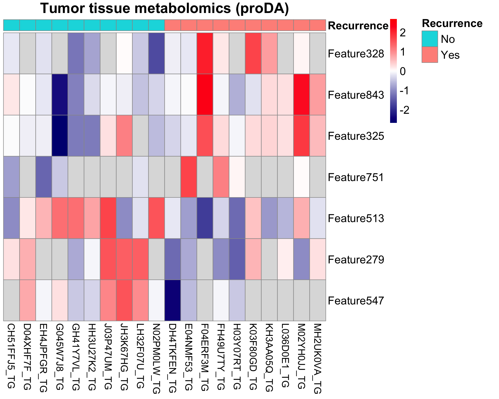

Single-omics analysis: Untargeted Metabolomics of Method Development cohort
Qian-Wu Liao
Last updated: 2023-12-06
Checks: 6 1
Knit directory: SMART-CARE_LungCancer/
This reproducible R Markdown analysis was created with workflowr (version 1.7.0). The Checks tab describes the reproducibility checks that were applied when the results were created. The Past versions tab lists the development history.
Great! Since the R Markdown file has been committed to the Git repository, you know the exact version of the code that produced these results.
Great job! The global environment was empty. Objects defined in the global environment can affect the analysis in your R Markdown file in unknown ways. For reproduciblity it’s best to always run the code in an empty environment.
The command set.seed(20230425) was run prior to running
the code in the R Markdown file. Setting a seed ensures that any results
that rely on randomness, e.g. subsampling or permutations, are
reproducible.
Great job! Recording the operating system, R version, and package versions is critical for reproducibility.
Nice! There were no cached chunks for this analysis, so you can be confident that you successfully produced the results during this run.
Using absolute paths to the files within your workflowr project makes it difficult for you and others to run your code on a different machine. Change the absolute path(s) below to the suggested relative path(s) to make your code more reproducible.
| absolute | relative |
|---|---|
| /Users/qianwu/Desktop/SMART-CARE_LungCancer | . |
Great! You are using Git for version control. Tracking code development and connecting the code version to the results is critical for reproducibility.
The results in this page were generated with repository version 7f8311b. See the Past versions tab to see a history of the changes made to the R Markdown and HTML files.
Note that you need to be careful to ensure that all relevant files for
the analysis have been committed to Git prior to generating the results
(you can use wflow_publish or
wflow_git_commit). workflowr only checks the R Markdown
file, but you know if there are other scripts or data files that it
depends on. Below is the status of the Git repository when the results
were generated:
Ignored files:
Ignored: .DS_Store
Ignored: .RData
Ignored: .Rhistory
Ignored: analysis/.DS_Store
Ignored: code/.DS_Store
Ignored: data/.DS_Store
Ignored: output/.DS_Store
Untracked files:
Untracked: analysis/feature_selection.Rmd
Untracked: code/archive/
Untracked: code/dataset_list.R
Untracked: code/workflowr_commands.R
Untracked: data/Discovery/
Untracked: data/MethodDev/
Untracked: data/aliquot_metadata.xlsx
Untracked: data/patient_metadata.xlsx
Untracked: data/sample_metadata.xlsx
Untracked: output/MethodDev/
Untracked: output/SC_meeting/
Note that any generated files, e.g. HTML, png, CSS, etc., are not included in this status report because it is ok for generated content to have uncommitted changes.
These are the previous versions of the repository in which changes were
made to the R Markdown
(analysis/MethodDev_02_soa_untargeted.Rmd) and HTML
(docs/MethodDev_02_soa_untargeted.html) files. If you’ve
configured a remote Git repository (see ?wflow_git_remote),
click on the hyperlinks in the table below to view the files as they
were in that past version.
| File | Version | Author | Date | Message |
|---|---|---|---|---|
| Rmd | a3af65a | LiaoQianWu | 2023-11-24 | Redo single-omics analysis of all method development and discovery datasets |
| Rmd | bba1011 | LiaoQianWu | 2023-11-17 | Rearrange file locations and redo preprocessing of all method development datasets |
Description: Conduct univariate (t-test) and multivariate (PCA) analyses on individual datasets, i.e., Plasma and Tissue Untargeted Metabolomics and Lipidomics generated by AG Hopf, to have overview of data and take initial look at data power in terms of predicting patient cancer recurrence. Association between each feature (metabolite and lipid level) and cancer recurrence was tested by t-test, which captures significant features that can separate recurrence and non-recurrence patient groups. PCA was performed to view sources of data variance associated with certain metadata variables.
Metadata variables
Patient (n = 20):
Recurrence -> Cancer recurrences, Yes:No = 1:1
Gender -> Male:Female = 13:7
Age -> Diagnosis ages ranging from 56 to 84
Smoking -> Smoker:Ex-smoker:Non-Smoker = 3:14:3
Stage -> Pathological stages, IB:IIA:IIB = 11:8:1
Adjuvant -> Adjuvant chemotherapy, True:False = 13:7
Sample (n = 40):
Condition -> Tissue sample conditions, Tumor:Normal = 1:1
TimePoint -> Plasma sample collection time points, Baseline:2 years
later = 1:1
Load libraries
library('SummarizedExperiment')
library('pcaMethods')
library('proDA')
library('limma')
library('pheatmap')
library('ggrepel')
library('openxlsx')
library('tidyverse')
# Load user-defined functions
source('./code/misc.R')
# Set plot theme
th <- theme_bw(base_size = 15) +
theme(axis.title = element_text(face = 'bold'),
axis.text = element_text(face = 'bold'),
axis.ticks = element_line(linewidth = 0.8),
legend.text = element_text(size = 15))Display associations between cancer recurrence and the other patient metadata variables to identify potential predictors (or confounders)
# Test associations between metadata variables
# Prepare sample metadata
metaPlasmaVsn <- readRDS('./data/MethodDev/AG_Hopf/metaPlasmaVsn.rds')
patientMetadat <- tibble::as_tibble(colData(metaPlasmaVsn)) %>%
dplyr::filter(!duplicated(Patient)) %>%
dplyr::select(Patient, Recurrence, Gender, Age, Smoking, Stage, Adjuvant)
patientRecur <- dplyr::select(patientMetadat, Patient, Recurrence)
patientMetadat <- dplyr::select(patientMetadat, -Recurrence)
testAsso(patientMetadat, patientRecur, cmn_col = 'Patient') %>%
dplyr::select(-Stat) Var1 Var2 pVal pValAdj Test
1 Smoking Recurrence 0.1637321 0.7522934 Chi-square
2 Gender Recurrence 0.3484426 0.7522934 Chi-square
3 Stage Recurrence 0.4513760 0.7522934 Chi-square
4 Age Recurrence 0.7129126 0.8911408 T-test
5 Adjuvant Recurrence 1.0000000 1.0000000 Chi-squarePlasma Metabolomics
Based on PCA result obtained by analyzing whole Plasma Metabolomics dataset that includes Baseline and Follow-up samples, we found that PCA mainly captures source of variation in time points, the unwanted variation. Besides, we attempt to identify biomarkers that can predict whether patients WILL experience cancer recurrence or not. Therefore, we decided to analyze Baseline and Follow-up samples separately.
# Load normalized data
metaPlasmaVsn <- readRDS('./data/MethodDev/AG_Hopf/metaPlasmaVsn.rds')
# Retrieve feature information for making significant feature table
featInfo <- tibble::as_tibble(rowData(metaPlasmaVsn), rownames = 'Feature')
# Perform analysis
metaPlasmaRes <- doSOA(metaPlasmaVsn, meta_var = 'TimePoint', pca_method = 'ppca', do_onlyPCA = T)
pcSigAssoRes <- metaPlasmaRes$pcSigAssoRes
pcTab <- metaPlasmaRes$pcTabDisplay significant associations between learned PCs (Var1) and metadata variable (Var2)
# Display PCs of interest
pcSigAssoRes Var1 Var2 pVal pValAdj Stat Test
1 PC1 (24.4%) TimePoint 1.09e-07 2.18e-06 -6.52 T-testPC1 explains large amount of variation in data and separates samples by time points.
ggplot(pcTab, aes(x=TimePoint, y=`PC1 (24.4%)`, col=TimePoint)) +
geom_boxplot(outlier.shape = NA) +
geom_jitter(position = position_jitter(0.3), size = 3, show.legend = F) +
ggpubr::stat_compare_means(method = 't.test', paired = F,
method.args = list(var.equal = T),
show.legend = F, size = 5) +
labs(x = 'Sample collection time point', color = 'Time Point') +
th
Baseline samples
Display significant associations between learned PCs (Var1) and metadata variables (Var2)
# Subset baseline samples
smpBaseIdx <- which(colData(metaPlasmaVsn)$Condition == 'Baseline')
metaBase <- metaPlasmaVsn[, smpBaseIdx]
# Display significant associations between PCs and metadata variables
metaBaseAssoRes <- doSOA(metaBase, meta_var = c('Recurrence', 'Gender', 'Age',
'Smoking', 'Stage', 'Adjuvant'),
pca_method = 'ppca', do_onlyPCA = T, num_PCs = 17)
metaBaseAssoRes$pcSigAssoRes Var1 Var2 pVal pValAdj Stat Test
1 PC16 (2.1%) Smoking 0.0160 0.626 5.32 ANOVA
2 PC14 (2.6%) Recurrence 0.0205 0.626 2.54 T-test
3 PC7 (5.4%) Gender 0.0213 0.626 -2.52 T-test
4 PC7 (5.4%) Smoking 0.0245 0.626 4.65 ANOVA
5 PC12 (3.3%) Smoking 0.0452 0.745 3.73 ANOVADisplay significant associations between features (Var1) and cancer recurrence (Var2) and observe molecular signatures in input data through heatmap. Note that features in heatmap are ordered by their t-statistics.
# Perform analysis
metaBaseRes <- doSOA(metaBase, meta_var = 'Recurrence', pca_method = 'ppca',
num_PCs = 17, num_PCfeats = 30)
datMat <- metaBaseRes$data
smpAnno <- metaBaseRes$smpMetadata
featSigAssoRes <- metaBaseRes$featSigAssoRes
pcSigAssoRes <- metaBaseRes$pcSigAssoRes
pcTab <- metaBaseRes$pcTab
pcTopFeatTab <- metaBaseRes$pcTopFeatTab
# Display features that can significantly separate recurrence and non-recurrence patients
featSigAssoRes <- dplyr::mutate(featSigAssoRes, m.z_RT = plyr::mapvalues(Var1,
from = featInfo$Feature,
to = featInfo$m.z_RT,
warn_missing = F))
featSigAssoRes Var1 Var2 pVal pValAdj Stat Test m.z_RT
1 Feature172 Recurrence 0.00098 0.450 3.93 T-test 609.0866/6.18
2 Feature599 Recurrence 0.00133 0.450 3.80 T-test 182.06337/6.18
3 Feature171 Recurrence 0.00178 0.450 3.66 T-test 593.09179/6.18
4 Feature764 Recurrence 0.00188 0.450 -4.18 T-test 703.57433/8.03
5 Feature635 Recurrence 0.00249 0.450 3.81 T-test 229.07941/7.09
6 Feature600 Recurrence 0.00282 0.450 3.46 T-test 198.05801/6.18
7 Feature2 Recurrence 0.00349 0.478 -3.36 T-test 352.3388/0.66
8 Feature556 Recurrence 0.00535 0.640 3.17 T-test 235.08384/5.75
9 Feature582 Recurrence 0.00723 0.768 3.03 T-test 198.05806/6.18
10 Feature416 Recurrence 0.00834 0.791 2.96 T-test 323.04905/3.68
11 Feature933 Recurrence 0.00909 0.791 -2.92 T-test 445.36728/8.44
12 Feature414 Recurrence 0.01000 0.800 2.88 T-test 301.06701/3.67
13 Feature220 Recurrence 0.01300 0.819 -2.76 T-test 498.39944/8.09
14 Feature746 Recurrence 0.01470 0.819 2.70 T-test 701.55886/7.91
15 Feature621 Recurrence 0.01580 0.819 -2.66 T-test 544.3386/6.95
16 Feature143 Recurrence 0.01730 0.819 -2.62 T-test 520.07519/5.65
17 Feature286 Recurrence 0.01750 0.819 2.62 T-test 514.87484/0.8
18 Feature188 Recurrence 0.01830 0.819 -2.60 T-test 387.27074/7.19
19 Feature17 Recurrence 0.01840 0.819 -2.61 T-test 294.00315/0.92
20 Feature700 Recurrence 0.01920 0.819 -2.57 T-test 489.3394/7.64
21 Feature934 Recurrence 0.02150 0.819 -2.52 T-test 432.31045/8.44
22 Feature101 Recurrence 0.02220 0.819 -2.50 T-test 563.0834/4.29
23 Feature792 Recurrence 0.02520 0.819 -2.44 T-test 410.34683/8.12
24 Feature230 Recurrence 0.02690 0.819 -2.55 T-test 261.13087/8.16
25 Feature750 Recurrence 0.02740 0.819 -2.41 T-test 352.33882/7.94
26 Feature620 Recurrence 0.02830 0.819 2.75 T-test 137.10721/6.82
27 Feature670 Recurrence 0.02880 0.819 2.38 T-test 365.13527/7.47
28 Feature124 Recurrence 0.02900 0.819 2.37 T-test 265.09994/4.79
29 Feature159 Recurrence 0.03270 0.819 -2.31 T-test 511.10385/5.76
30 Feature217 Recurrence 0.03310 0.819 -2.31 T-test 547.38137/8.07
31 Feature318 Recurrence 0.03350 0.819 2.30 T-test 794.8109/0.8
32 Feature218 Recurrence 0.03390 0.819 -2.30 T-test 542.42597/8.07
33 Feature512 Recurrence 0.03610 0.819 2.26 T-test 188.068/5.51
34 Feature299 Recurrence 0.03690 0.819 2.25 T-test 770.85031/0.79
35 Feature895 Recurrence 0.03690 0.819 -2.25 T-test 313.27355/8.39
36 Feature565 Recurrence 0.03710 0.819 -2.25 T-test 519.07254/5.82
37 Feature813 Recurrence 0.03810 0.819 2.36 T-test 221.11055/8.15
38 Feature345 Recurrence 0.03960 0.819 2.22 T-test 235.09213/1.26
39 Feature791 Recurrence 0.03980 0.819 -2.22 T-test 415.30245/8.13
40 Feature33 Recurrence 0.04020 0.819 2.21 T-test 309.09255/1.35
41 Feature638 Recurrence 0.04090 0.819 2.21 T-test 229.07914/7.19
42 Feature669 Recurrence 0.04130 0.819 2.20 T-test 365.13554/7.45
43 Feature702 Recurrence 0.04150 0.819 -2.20 T-test 445.31292/7.66
44 Feature917 Recurrence 0.04210 0.819 -2.21 T-test 124.08715/8.45
45 Feature89 Recurrence 0.04250 0.819 2.18 T-test 208.00944/3.67
46 Feature511 Recurrence 0.04490 0.819 2.16 T-test 577.18763/5.48
47 Feature221 Recurrence 0.04620 0.819 -2.16 T-test 353.34143/8.1
48 Feature370 Recurrence 0.04690 0.819 2.13 T-test 262.88792/1.45
49 Feature457 Recurrence 0.04720 0.819 -2.13 T-test 567.11437/5.12
50 Feature701 Recurrence 0.04870 0.819 -2.11 T-test 401.28682/7.68
51 Feature712 Recurrence 0.04870 0.819 2.16 T-test 701.55848/7.72# Plot molecular signatures in input data
# Order features according to t-statistics
featOrder <- dplyr::arrange(featSigAssoRes, dplyr::desc(Stat))$Var1
# Arrange samples to make same groups in same clusters
smpOrder <- c(which(smpAnno$Recurrence == 'No'),
which(smpAnno$Recurrence == 'Yes'))
# Prepare recurrence table for annotating samples in heatmap
smpRecur <- dplyr::select(smpAnno, Sample, Recurrence) %>%
tibble::column_to_rownames('Sample')
pheatmap(datMat[featOrder, smpOrder],
annotation_col = smpRecur,
color = colorRampPalette(c('navy', 'white', 'red'))(100),
cluster_rows = F, cluster_cols = F, show_rownames = T,
scale = 'row', #row scaling is across columns
main = 'Baseline plasma metabolomics')Owing to missing values, there might be a situation that only few observations in sample groups, resulting in unreliable t-statistics. We used probabilistic dropout model (proDA package) to account for missing values and identify differentially abundant entities that are significantly associated with cancer recurrence. Note that features in heatmap are ordered by their t-statistics.
# Fit linear probabilistic dropout model to normalized data
fit <- proDA(datMat, design = ~ smpAnno$Recurrence)
# fit
# Check coefficient names for Parameter 'contrast' in proDA::test_diff()
# proDA::result_names(fit)
# Identify significant differentially abundant entities
all_proDAMetaBaseRes <- proDA::test_diff(fit,
contrast = `smpAnno$RecurrenceYes`,
sort_by = 'pval')
proDAMetaBaseRes <- dplyr::select(all_proDAMetaBaseRes,
-c(diff, se, df, avg_abundance, n_approx)) %>%
dplyr::filter(pval < 0.05) %>%
dplyr::mutate(m.z_RT = plyr::mapvalues(name,
from = featInfo$Feature,
to = featInfo$m.z_RT,
warn_missing = F))
proDAMetaBaseRes name pval adj_pval t_statistic n_obs m.z_RT
1 Feature599 0.001376869 0.5159371 3.778135 20 182.06337/6.18
2 Feature172 0.001572539 0.5159371 3.718492 20 609.0866/6.18
3 Feature171 0.001808741 0.5159371 3.655650 20 593.09179/6.18
4 Feature764 0.002326183 0.5159371 -3.542541 12 703.57433/8.03
5 Feature600 0.002695596 0.5159371 3.476173 20 198.05801/6.18
6 Feature2 0.004017391 0.6407739 -3.295912 20 352.3388/0.66
7 Feature556 0.005466207 0.7473085 3.155977 20 235.08384/5.75
8 Feature582 0.007765814 0.9289855 2.995213 20 198.05806/6.18
9 Feature635 0.008839406 0.9319082 2.935532 14 229.07941/7.09
10 Feature933 0.010337479 0.9319082 -2.863039 20 445.36728/8.44
11 Feature416 0.010711589 0.9319082 2.846522 20 323.04905/3.68
12 Feature414 0.013018583 0.9587924 2.755502 20 301.06701/3.67
13 Feature220 0.013402327 0.9587924 -2.741884 20 498.39944/8.09
14 Feature143 0.016969151 0.9587924 -2.630621 20 520.07519/5.65
15 Feature746 0.017025716 0.9587924 2.629043 20 701.55886/7.91
16 Feature621 0.018336346 0.9587924 -2.593811 20 544.3386/6.95
17 Feature188 0.020062596 0.9587924 -2.550885 20 387.27074/7.19
18 Feature934 0.020805341 0.9587924 -2.533483 20 432.31045/8.44
19 Feature101 0.023876132 0.9587924 -2.467253 20 563.0834/4.29
20 Feature17 0.024868032 0.9587924 -2.447569 19 294.00315/0.92
21 Feature792 0.024907265 0.9587924 -2.446805 20 410.34683/8.12
22 Feature670 0.028100500 0.9587924 2.388169 20 365.13527/7.47
23 Feature700 0.033406508 0.9587924 -2.303267 20 489.3394/7.64
24 Feature124 0.033414530 0.9587924 2.303148 20 265.09994/4.79
25 Feature218 0.033954468 0.9587924 -2.295227 20 542.42597/8.07
26 Feature895 0.036468074 0.9587924 -2.259821 20 313.27355/8.39
27 Feature217 0.037114404 0.9587924 -2.251082 20 547.38137/8.07
28 Feature565 0.037175704 0.9587924 -2.250261 20 519.07254/5.82
29 Feature159 0.037199651 0.9587924 -2.249940 20 511.10385/5.76
30 Feature512 0.038306023 0.9587924 2.235333 20 188.068/5.51
31 Feature345 0.039189236 0.9587924 2.223948 20 235.09213/1.26
32 Feature813 0.040605696 0.9587924 2.206174 13 221.11055/8.15
33 Feature750 0.040975088 0.9587924 -2.201632 19 352.33882/7.94
34 Feature917 0.043290992 0.9587924 -2.173987 18 124.08715/8.45
35 Feature857 0.043938332 0.9587924 -2.166502 14 197.10716/8.26
36 Feature318 0.044258296 0.9587924 2.162840 20 794.8109/0.8
37 Feature33 0.044327274 0.9587924 2.162053 20 309.09255/1.35
38 Feature712 0.045163615 0.9587924 2.152607 16 701.55848/7.72
39 Feature791 0.046240597 0.9587924 -2.140675 20 415.30245/8.13
40 Feature669 0.047616852 0.9587924 2.125792 20 365.13554/7.45
41 Feature457 0.048817576 0.9587924 -2.113123 20 567.11437/5.12
42 Feature89 0.049900796 0.9587924 2.101936 20 208.00944/3.67# Plot molecular signatures in input data
# Order features according to t-statistics
featOrder <- dplyr::arrange(proDAMetaBaseRes, dplyr::desc(t_statistic))$name
pheatmap(datMat[featOrder, smpOrder],
annotation_col = smpRecur,
color = colorRampPalette(c('navy', 'white', 'red'))(100),
cluster_rows = F, cluster_cols = F, show_rownames = T,
scale = 'row', main = 'Baseline plasma metabolomics (proDA)')# Store table in list for creating Excel file
# sigFeatSheet <- list(BasePlasmaMetab_Feats = proDAMetaBaseRes)ovl <- intersect(metaBaseRes$featSigAssoRes$Var1, proDAMetaBaseRes$name)
cat('The following features', paste0('(n =', length(ovl), ')'),
'are tested significant by both methods:\n', ovl)The following features (n =41) are tested significant by both methods:
Feature172 Feature599 Feature171 Feature764 Feature635 Feature600 Feature2 Feature556 Feature582 Feature416 Feature933 Feature414 Feature220 Feature746 Feature621 Feature143 Feature188 Feature17 Feature700 Feature934 Feature101 Feature792 Feature750 Feature670 Feature124 Feature159 Feature217 Feature318 Feature218 Feature512 Feature895 Feature565 Feature813 Feature345 Feature791 Feature33 Feature669 Feature917 Feature89 Feature457 Feature712-> Most of recurrence-related features captured by proDA are
covered in ordinary t-test.
Visualize data of top 6 significant features based on proDA result (ns: p > 0.05, \(*\): p <= 0.05, \(**\): p <= 0.01, \(***\): p <= 0.001)
# Prepare data matrix and metadata including all samples
dat <- metaPlasmaRes$data
anno <- metaPlasmaRes$smpMetadata %>%
dplyr::mutate(TimePoint = dplyr::case_when(TimePoint == 'Baseline' ~ 'Baseline',
TimePoint == '2 years later' ~ 'Follow-up'))
# Prepare significant feature table
num_sigFeats <- 6
gpLevel = c('Yes_Baseline', 'No_Baseline', 'Yes_Follow-up', 'No_Follow-up')
tpCol = c('firebrick', 'grey50') #c(Baseline, Follow-up)
# Extract top significant features and prepare needed information
topSigFeats <- proDAMetaBaseRes[1:num_sigFeats,] %>%
dplyr::select(name, m.z_RT) %>%
dplyr::rename(Var1 = name) %>%
dplyr::mutate(newVar1 = paste0(Var1, '\n(', m.z_RT, ')'),
newVar1 = factor(newVar1, levels = unique(newVar1)))
topSigFeatDat <- tibble::as_tibble(dat[topSigFeats$Var1,], rownames = 'Var1') %>%
tidyr::pivot_longer(cols = -'Var1', names_to = 'Sample', values_to = 'Abundance') %>%
dplyr::left_join(topSigFeats, by = 'Var1') %>%
dplyr::left_join(anno, by = 'Sample') %>%
dplyr::mutate(Recur_TP = paste0(Recurrence, '_', TimePoint),
Recur_TP = factor(Recur_TP, levels = gpLevel))
ggplot(topSigFeatDat, aes(x=Recur_TP, y=Abundance, col=TimePoint, fill=Recurrence)) +
geom_boxplot(alpha = 1, outlier.shape = NA, linewidth = 1) +
geom_jitter(position = position_jitter(0.2), size = 2, show.legend = F) +
ggpubr::stat_compare_means(method = 't.test', paired = F, method.args = list(var.equal = T),
comparisons = list(c('Yes_Baseline', 'No_Baseline'),
c('Yes_Follow-up', 'No_Follow-up')),
label = 'p.signif', tip.length = 0.015, bracket.size = 0.7, size = 4) +
labs(x = 'Recurrence') +
scale_color_manual(values = tpCol, name = 'Time Point') +
scale_fill_manual(values=c('#00BFC4', '#F8766D')) +
facet_wrap(vars(newVar1), scales = 'free') +
th + theme(strip.text = element_text(size = 13, face = 'bold'),
axis.text.x = element_text(angle = 45, hjust = 1, vjust = 1))Assess data power by p-value histogram
p <- all_proDAMetaBaseRes$pval
hist(p, xlab = 'P-value', main = 'Baseline Plasma Metabolomics (proDA)')Display significant associations between PCs (Var1) and cancer recurrence (Var2)
# Display PCs that can significantly separate recurrence and non-recurrence patients
pcSigAssoRes Var1 Var2 pVal pValAdj Stat Test
1 PC14 (2.6%) Recurrence 0.0205 0.349 2.54 T-testPC14 potentially separates recurrence and non-recurrence patients.
# Visualize PCs
ggplot(pcTab, aes(x=Recurrence, y=`PC14 (2.6%)`, col=Recurrence, fill=Recurrence)) +
geom_boxplot(alpha = 0.7, outlier.shape = NA) +
geom_jitter(position = position_jitter(0.3), size = 3, show.legend = F) +
labs(title = 'Baseline plasma metabolomics') +
scale_color_manual(values=c('#00BFC4', '#F8766D')) +
scale_fill_manual(values=c('#00BFC4', '#F8766D')) +
ggpubr::stat_compare_means(method = 't.test', paired = F,
method.args = list(var.equal = T),
show.legend = F, size = 5) +
thPlot molecular signatures captured by PC14 in input data. We took a look at top 20 features with highest loadings and observed metabolite levels of these top features through heatmap. Note that features in heatmap are ordered by their loadings. There is no single feature that can decently hint if patients will suffer cancer recurrence or not, which means each of these top features contributes a bit to explaining variation between recurrence and non-recurrence patients.
# Plot molecular signatures in input data
# Extract top features with highest loadings
topFeats <- pcTopFeatTab$PC14$Feature[1:20]
# Order features by loadings
topFeatsIdx <- sapply(topFeats, function(feat) {which(rownames(datMat) == feat)})
pheatmap(datMat[topFeatsIdx, smpOrder],
annotation_col = smpRecur,
color = colorRampPalette(c('navy', 'white', 'red'))(100),
cluster_rows = F, cluster_cols = F,
scale = 'row', main = 'Baseline plasma metabolomics - PC14')
Display top features that build the PC14
# Display top features with highest loadings of PC of interest
pcTopFeats <- dplyr::left_join(pcTopFeatTab$PC14, featInfo, by = 'Feature')
pcTopFeats Feature Loading m.z_RT
1 Feature91 -0.1570 382.06973/3.77
2 Feature33 0.1450 309.09255/1.35
3 Feature178 -0.1420 423.19858/6.44
4 Feature185 -0.1410 220.16934/7.05
5 Feature187 -0.1400 623.30251/7.19
6 Feature910 -0.1300 663.58098/8.43
7 Feature212 0.1300 704.57751/8.03
8 Feature25 0.1280 317.05587/1.28
9 Feature86 -0.1140 358.20068/3.6
10 Feature373 0.1120 352.33899/2.12
11 Feature946 -0.1120 370.35482/8.45
12 Feature367 0.1090 315.07881/1.38
13 Feature258 -0.1070 494.32905/8.37
14 Feature922 0.1040 168.13829/8.44
15 Feature926 -0.1030 369.35128/8.45
16 Feature262 -0.1010 479.46354/8.42
17 Feature901 -0.0990 341.30449/8.36
18 Feature912 -0.0948 332.29506/8.43
19 Feature625 -0.0910 320.25574/6.97
20 Feature915 -0.0903 123.09186/8.43
21 Feature712 -0.0897 701.55848/7.72
22 Feature878 -0.0885 369.3509/8.29
23 Feature119 0.0881 267.07945/4.61
24 Feature597 0.0880 279.0093/6.18
25 Feature746 0.0877 701.55886/7.91
26 Feature345 0.0870 235.09213/1.26
27 Feature338 0.0860 247.09253/1.01
28 Feature366 0.0858 638.0994/1.33
29 Feature908 0.0848 217.10418/8.44
30 Feature637 -0.0846 320.25576/7.15# Store table in list for creating Excel file
# sigFeatSheet <- append(sigFeatSheet, list(BasePlasmaMetab_PC14 = pcTopFeats))Follow-up samples
Display significant associations between learned PCs (Var1) and metadata variables (Var2)
# Subset follow-up samples
smpFoloIdx <- which(colData(metaPlasmaVsn)$Condition != 'Baseline')
metaFolo <- metaPlasmaVsn[, smpFoloIdx]
# Display significant associations between PCs and metadata variables
metaFoloAssoRes <- doSOA(metaFolo, meta_var = c('Recurrence', 'Gender', 'Adjuvant'),
pca_method = 'ppca', do_onlyPCA = T, num_PCs = 17)
metaFoloAssoRes$pcSigAssoRes Var1 Var2 pVal pValAdj Stat Test
1 PC13 (3.2%) Recurrence 0.0201 0.756 2.55 T-test
2 PC6 (5.5%) Adjuvant 0.0384 0.756 -2.23 T-testDisplay significant associations between features (Var1) and recurrence (Var2) and observe molecular signatures in input data through heatmap. Use probabilistic dropout model (proDA package) to account for missing values and identify differentially abundant entities that are significantly associated with cancer recurrence. Note that features in heatmap are ordered by their t-statistics.
# Perform analysis
metaFoloRes <- doSOA(metaFolo, meta_var = 'Recurrence', pca_method = 'ppca',
num_PCs = 17, num_PCfeats = 30, use_proDA = T)
datMat <- metaFoloRes$data
smpAnno <- metaFoloRes$smpMetadata
featSigAssoRes <- metaFoloRes$featSigAssoRes
featAssoRes <- metaFoloRes$featAssoRes
pcSigAssoRes <- metaFoloRes$pcSigAssoRes
pcTab <- metaFoloRes$pcTab
pcTopFeatTab <- metaFoloRes$pcTopFeatTab
# Display features that can significantly separate recurrence and non-recurrence patients
featSigAssoRes <- dplyr::mutate(featSigAssoRes, m.z_RT = plyr::mapvalues(Var1,
from = featInfo$Feature,
to = featInfo$m.z_RT,
warn_missing = F))
featSigAssoRes Var1 Var2 pVal pValAdj Stat Test m.z_RT
1 Feature917 Recurrence 0.00282 0.755 3.46 T-test (proDA) 124.08715/8.45
2 Feature900 Recurrence 0.00312 0.755 3.41 T-test (proDA) 466.29777/8.4
3 Feature961 Recurrence 0.00394 0.755 3.31 T-test (proDA) 210.08713/8.46
4 Feature902 Recurrence 0.00492 0.755 3.20 T-test (proDA) 313.27329/8.39
5 Feature575 Recurrence 0.01200 0.755 2.80 T-test (proDA) 229.07944/6.04
6 Feature189 Recurrence 0.01240 0.755 2.78 T-test (proDA) 200.20072/7.22
7 Feature78 Recurrence 0.01320 0.755 -2.75 T-test (proDA) 261.03582/3.55
8 Feature911 Recurrence 0.01380 0.755 2.73 T-test (proDA) 221.1105/8.45
9 Feature524 Recurrence 0.01950 0.755 -2.57 T-test (proDA) 431.15645/5.56
10 Feature268 Recurrence 0.02260 0.755 2.49 T-test (proDA) 219.09487/8.46
11 Feature818 Recurrence 0.02280 0.755 2.49 T-test (proDA) 168.07665/8.16
12 Feature802 Recurrence 0.02420 0.755 2.46 T-test (proDA) 365.13559/8.13
13 Feature519 Recurrence 0.02430 0.755 -2.46 T-test (proDA) 453.13787/5.56
14 Feature356 Recurrence 0.02440 0.755 2.46 T-test (proDA) 367.99125/1.31
15 Feature890 Recurrence 0.02490 0.755 2.45 T-test (proDA) 369.35262/8.34
16 Feature642 Recurrence 0.02770 0.755 2.40 T-test (proDA) 810.59915/7.23
17 Feature352 Recurrence 0.03020 0.755 2.35 T-test (proDA) 346.00917/1.29
18 Feature869 Recurrence 0.03070 0.755 2.35 T-test (proDA) 151.123/8.3
19 Feature395 Recurrence 0.03080 0.755 -2.34 T-test (proDA) 267.07925/3.44
20 Feature180 Recurrence 0.03120 0.755 -2.34 T-test (proDA) 241.17313/6.66
21 Feature965 Recurrence 0.03440 0.755 2.29 T-test (proDA) 168.07669/8.46
22 Feature270 Recurrence 0.03570 0.755 2.27 T-test (proDA) 279.09334/8.47
23 Feature635 Recurrence 0.03810 0.755 2.24 T-test (proDA) 229.07941/7.09
24 Feature556 Recurrence 0.04000 0.755 2.21 T-test (proDA) 235.08384/5.75
25 Feature883 Recurrence 0.04180 0.755 2.19 T-test (proDA) 165.11347/8.3
26 Feature814 Recurrence 0.04220 0.755 2.19 T-test (proDA) 165.11334/8.15
27 Feature49 Recurrence 0.04380 0.755 -2.17 T-test (proDA) 181.07178/2.81
28 Feature472 Recurrence 0.04400 0.755 -2.17 T-test (proDA) 403.12533/5.23
29 Feature536 Recurrence 0.04430 0.755 2.16 T-test (proDA) 253.05713/5.64
30 Feature712 Recurrence 0.04470 0.755 2.16 T-test (proDA) 701.55848/7.72
31 Feature33 Recurrence 0.04520 0.755 2.15 T-test (proDA) 309.09255/1.35
32 Feature473 Recurrence 0.04520 0.755 -2.15 T-test (proDA) 310.06741/5.23
33 Feature54 Recurrence 0.04540 0.755 -2.15 T-test (proDA) 212.04855/3.03
34 Feature853 Recurrence 0.04540 0.755 2.15 T-test (proDA) 313.27324/8.23
35 Feature972 Recurrence 0.04570 0.755 -2.15 T-test (proDA) 782.56886/8.49
36 Feature527 Recurrence 0.04600 0.755 2.14 T-test (proDA) 760.58319/5.61
37 Feature664 Recurrence 0.04670 0.755 2.14 T-test (proDA) 226.21643/7.48
38 Feature751 Recurrence 0.04700 0.755 2.13 T-test (proDA) 166.09773/7.95
39 Feature829 Recurrence 0.04760 0.755 2.13 T-test (proDA) 207.12361/8.17
40 Feature136 Recurrence 0.04860 0.755 -2.12 T-test (proDA) 855.25502/5.38
41 Feature717 Recurrence 0.04920 0.755 -2.11 T-test (proDA) 343.2853/7.72
42 Feature598 Recurrence 0.04940 0.755 2.11 T-test (proDA) 229.07916/6.18# Plot molecular signatures in input data
# Order features according to t-statistics
featOrder <- dplyr::arrange(featSigAssoRes, dplyr::desc(Stat))$Var1
# Arrange samples to make same groups in same clusters
smpOrder <- c(which(smpAnno$Recurrence == 'No'),
which(smpAnno$Recurrence == 'Yes'))
# Prepare recurrence table for annotating samples in heatmap
smpRecur <- dplyr::select(smpAnno, Sample, Recurrence) %>%
tibble::column_to_rownames('Sample')
pheatmap(datMat[featOrder, smpOrder],
annotation_col = smpRecur,
color = colorRampPalette(c('navy', 'white', 'red'))(100),
cluster_rows = F, cluster_cols = F, show_rownames = T,
scale = 'row', main = 'Follow-up plasma metabolomics (proDA)')# Store table in list for creating Excel file
# sigFeatSheet <- append(sigFeatSheet, list(FolloPlasmaMetab_Feats = featSigAssoRes))
# Prepare significant feature table for summary
proDAMetaFoloRes <- featSigAssoRes
all_proDAMetaFoloRes <- featAssoResVisualize data of top 6 significant features (ns: p > 0.05, \(*\): p <= 0.05, \(**\): p <= 0.01, \(***\): p <= 0.001)
# Prepare data matrix and metadata including all samples
dat <- metaPlasmaRes$data
anno <- metaPlasmaRes$smpMetadata %>%
dplyr::mutate(TimePoint = dplyr::case_when(TimePoint == 'Baseline' ~ 'Baseline',
TimePoint == '2 years later' ~ 'Follow-up'))
# Prepare significant feature table
num_sigFeats <- 6
gpLevel = c('Yes_Follow-up', 'No_Follow-up', 'Yes_Baseline', 'No_Baseline')
tpCol = c('grey50', 'firebrick') #c(Baseline, Follow-up)
# Extract top significant features and prepare needed information
topSigFeats <- featSigAssoRes[1:num_sigFeats,] %>%
dplyr::select(Var1, m.z_RT) %>%
dplyr::mutate(newVar1 = paste0(Var1, '\n(', m.z_RT, ')'),
newVar1 = factor(newVar1, levels = unique(newVar1)))
topSigFeatDat <- tibble::as_tibble(dat[topSigFeats$Var1,], rownames = 'Var1') %>%
tidyr::pivot_longer(cols = -'Var1', names_to = 'Sample', values_to = 'Abundance') %>%
dplyr::left_join(topSigFeats, by = 'Var1') %>%
dplyr::left_join(anno, by = 'Sample') %>%
dplyr::mutate(Recur_TP = paste0(Recurrence, '_', TimePoint),
Recur_TP = factor(Recur_TP, levels = gpLevel))
ggplot(topSigFeatDat, aes(x=Recur_TP, y=Abundance, col=TimePoint, fill=Recurrence)) +
geom_boxplot(alpha = 1, outlier.shape = NA, linewidth = 1) +
geom_jitter(position = position_jitter(0.2), size = 2, show.legend = F) +
ggpubr::stat_compare_means(method = 't.test', paired = F, method.args = list(var.equal = T),
comparisons = list(c('Yes_Follow-up', 'No_Follow-up'),
c('Yes_Baseline', 'No_Baseline')),
label = 'p.signif', tip.length = 0.015, bracket.size = 0.7, size = 4) +
labs(x = 'Recurrence') +
scale_color_manual(values = tpCol, name = 'Time Point') +
scale_fill_manual(values=c('#00BFC4', '#F8766D')) +
facet_wrap(vars(newVar1), scales = 'free') +
th + theme(strip.text = element_text(size = 13, face = 'bold'),
axis.text.x = element_text(angle = 45, hjust = 1, vjust = 1))Assess data power by p-value histogram
p <- featAssoRes$pVal
hist(p, xlab = 'P-value', main = 'Follow-up Plasma Metabolomics (proDA)')Display significant associations between PCs (Var1) and cancer recurrence (Var2)
# Display PCs that can significantly separate recurrence and non-recurrence patients
pcSigAssoRes Var1 Var2 pVal pValAdj Stat Test
1 PC13 (3.2%) Recurrence 0.0201 0.342 2.55 T-testVisualize significant PCs and display their top features with greatest absolute loadings
# Visualize PCs
ggplot(pcTab, aes(x=Recurrence, y=`PC13 (3.2%)`, col=Recurrence, fill=Recurrence)) +
geom_boxplot(alpha = 0.7, outlier.shape = NA) +
geom_jitter(position = position_jitter(0.3), size = 3, show.legend = F) +
labs(title = 'Follow-up plasma metabolomics') +
scale_color_manual(values=c('#00BFC4', '#F8766D')) +
scale_fill_manual(values=c('#00BFC4', '#F8766D')) +
ggpubr::stat_compare_means(method = 't.test', paired = F,
method.args = list(var.equal = T),
show.legend = F, size = 5) +
th# Display top features with highest loadings of PC of interest
pcTopFeats <- dplyr::left_join(pcTopFeatTab$PC13, featInfo, by = 'Feature')
pcTopFeats Feature Loading m.z_RT
1 Feature479 -0.3270 181.08553/5.31
2 Feature178 -0.1920 423.19858/6.44
3 Feature764 -0.1900 703.57433/8.03
4 Feature890 0.1520 369.35262/8.34
5 Feature519 -0.1340 453.13787/5.56
6 Feature524 -0.1290 431.15645/5.56
7 Feature722 -0.1240 806.56832/7.76
8 Feature63 -0.1100 195.08752/3.2
9 Feature717 -0.1030 343.2853/7.72
10 Feature65 0.1030 235.18009/3.28
11 Feature862 0.1020 124.087/8.29
12 Feature429 0.0994 234.20605/3.97
13 Feature49 -0.0990 181.07178/2.81
14 Feature745 0.0973 758.56939/7.93
15 Feature616 0.0972 758.5675/6.74
16 Feature667 0.0972 758.56971/7.45
17 Feature93 0.0966 218.21104/3.87
18 Feature597 0.0944 279.0093/6.18
19 Feature877 0.0926 429.37212/8.27
20 Feature922 0.0908 168.13829/8.44
21 Feature374 0.0894 352.33895/2.39
22 Feature950 -0.0885 276.23191/8.47
23 Feature822 -0.0882 284.2942/8.16
24 Feature561 0.0879 741.14289/5.77
25 Feature827 0.0861 758.56907/8.17
26 Feature114 -0.0853 246.24244/4.49
27 Feature600 0.0846 198.05801/6.18
28 Feature776 0.0837 524.36926/8.06
29 Feature712 0.0827 701.55848/7.72
30 Feature894 -0.0790 663.45272/8.36# Store table in list for creating Excel file
# sigFeatSheet <- append(sigFeatSheet, list(FolloPlasmaMetab_PC13 = pcTopFeats))Plasma Lipidomics
As described in Plasma Metabolomics section, we analyzed Baseline and Follow-up samples separately.
# Load normalized data
lipPlasmaVsn <- readRDS('./data/MethodDev/AG_Hopf/lipPlasmaVsn.rds')
# Retrieve feature information for making significant feature table
featInfo <- tibble::as_tibble(rowData(lipPlasmaVsn), rownames = 'Feature')
# Perform analysis
lipPlasmaRes <- doSOA(lipPlasmaVsn, meta_var = 'TimePoint', pca_method = 'ppca', do_onlyPCA = T)
pcSigAssoRes <- lipPlasmaRes$pcSigAssoRes
pcTab <- lipPlasmaRes$pcTabDisplay significant associations between learned PCs (Var1) and metadata variable (Var2)
# Display PCs of interest
pcSigAssoRes Var1 Var2 pVal pValAdj Stat Test
1 PC1 (16.7%) TimePoint 5.75e-08 1.15e-06 -6.73 T-test
2 PC8 (4.5%) TimePoint 2.06e-02 2.06e-01 -2.42 T-test
3 PC2 (12.8%) TimePoint 4.82e-02 3.21e-01 2.04 T-testPC1 and PC2 explain large amount of variation in data and separate samples by time point.
ggplot(pcTab, aes(x=`PC1 (16.7%)`, y=`PC2 (12.8%)`, col=TimePoint, group=Patient)) +
geom_point(size = 5) +
geom_line(col = 'grey50', linetype = 'dashed') +
scale_color_discrete(name = 'Time point') +
thBaseline samples
Display significant associations between learned PCs (Var1) and metadata variables (Var2)
# Subset baseline samples
smpBaseIdx <- which(colData(lipPlasmaVsn)$Condition == 'Baseline')
lipBase <- lipPlasmaVsn[, smpBaseIdx]
# Display significant associations between PCs and metadata variables
lipBaseAssoRes <- doSOA(lipBase, meta_var = c('Recurrence', 'Gender', 'Age',
'Smoking', 'Stage', 'Adjuvant'),
pca_method = 'ppca', do_onlyPCA = T, num_PCs = 17)
lipBaseAssoRes$pcSigAssoRes Var1 Var2 pVal pValAdj Stat Test
1 PC10 (3.6%) Age 0.0126 0.622 0.547 Correlation
2 PC14 (2.5%) Adjuvant 0.0178 0.622 2.610 T-test
3 PC12 (3%) Stage 0.0381 0.622 3.990 ANOVA
4 PC16 (2%) Stage 0.0413 0.622 3.870 ANOVA
5 PC4 (7.7%) Smoking 0.0448 0.622 3.750 ANOVA
6 PC5 (6%) Recurrence 0.0483 0.622 -2.120 T-testDisplay significant associations between features (Var1) and recurrence (Var2) and observe molecular signatures in input data through heatmap. Use probabilistic dropout model (proDA package) to account for missing values and identify differentially abundant entities that are significantly associated with cancer recurrence. Note that features in heatmap are ordered by their t-statistics.
# Perform analysis
lipBaseRes <- doSOA(lipBase, meta_var = 'Recurrence', pca_method = 'ppca',
num_PCs = 17, num_PCfeats = 30, use_proDA = T)
datMat <- lipBaseRes$data
smpAnno <- lipBaseRes$smpMetadata
featSigAssoRes <- lipBaseRes$featSigAssoRes
featAssoRes <- lipBaseRes$featAssoRes
pcSigAssoRes <- lipBaseRes$pcSigAssoRes
pcTab <- lipBaseRes$pcTab
pcTopFeatTab <- lipBaseRes$pcTopFeatTab
# Display features that can significantly separate recurrence and non-recurrence patients
featSigAssoRes <- dplyr::mutate(featSigAssoRes, m.z_RT = plyr::mapvalues(Var1,
from = featInfo$Feature,
to = featInfo$m.z_RT,
warn_missing = F))
featSigAssoRes Var1 Var2 pVal pValAdj Stat Test m.z_RT
1 Feature691 Recurrence 0.00229 0.999 -3.55 T-test (proDA) 807.67/7.94
2 Feature701 Recurrence 0.00386 0.999 -3.31 T-test (proDA) 749.70/7.96
3 Feature2367 Recurrence 0.00548 0.999 -3.15 T-test (proDA) 748.69/7.97
4 Feature1246 Recurrence 0.00636 0.999 -3.09 T-test (proDA) 703.57/4.23
5 Feature579 Recurrence 0.00854 0.999 2.95 T-test (proDA) 628.59/6.3
6 Feature689 Recurrence 0.00895 0.999 -2.93 T-test (proDA) 1,317.21/7.94
7 Feature509 Recurrence 0.00976 0.999 2.89 T-test (proDA) 895.57/5.82
8 Feature2347 Recurrence 0.01030 0.999 -2.87 T-test (proDA) 719.65/7.98
9 Feature1390 Recurrence 0.01190 0.999 2.80 T-test (proDA) 732.55/4.82
10 Feature686 Recurrence 0.01460 0.999 -2.70 T-test (proDA) 371.36/7.94
11 Feature2011 Recurrence 0.01650 0.999 2.64 T-test (proDA) 619.53/6.65
12 Feature124 Recurrence 0.01730 0.999 2.62 T-test (proDA) 909.80/1.04
13 Feature510 Recurrence 0.01730 0.999 2.62 T-test (proDA) 878.58/5.82
14 Feature1962 Recurrence 0.01790 0.999 2.61 T-test (proDA) 591.49/6.29
15 Feature1943 Recurrence 0.01880 0.999 -2.58 T-test (proDA) 850.67/6.25
16 Feature2252 Recurrence 0.01900 0.999 -2.58 T-test (proDA) 746.68/7.85
17 Feature2183 Recurrence 0.01920 0.999 -2.57 T-test (proDA) 742.65/7.74
18 Feature2297 Recurrence 0.02060 0.999 -2.54 T-test (proDA) 682.65/7.92
19 Feature2338 Recurrence 0.02110 0.999 -2.53 T-test (proDA) 748.66/7.94
20 Feature711 Recurrence 0.02150 0.999 -2.52 T-test (proDA) 735.68/7.98
21 Feature610 Recurrence 0.02290 0.999 2.49 T-test (proDA) 614.57/6.66
22 Feature2224 Recurrence 0.02310 0.999 -2.48 T-test (proDA) 721.67/7.8
23 Feature1704 Recurrence 0.02320 0.999 -2.48 T-test (proDA) 816.59/5.56
24 Feature2358 Recurrence 0.02320 0.999 -2.48 T-test (proDA) 692.63/7.96
25 Feature2184 Recurrence 0.02340 0.999 -2.48 T-test (proDA) 756.66/7.74
26 Feature1467 Recurrence 0.02450 0.999 -2.45 T-test (proDA) 767.58/5.01
27 Feature1387 Recurrence 0.02490 0.999 2.45 T-test (proDA) 822.54/4.79
28 Feature752 Recurrence 0.02590 0.999 2.43 T-test (proDA) 382.07/0.77
29 Feature1715 Recurrence 0.02610 0.999 -2.42 T-test (proDA) 817.59/5.56
30 Feature2178 Recurrence 0.02850 0.999 -2.38 T-test (proDA) 719.57/7.74
31 Feature887 Recurrence 0.02870 0.999 2.38 T-test (proDA) 815.80/1.05
32 Feature2314 Recurrence 0.02940 0.999 -2.37 T-test (proDA) 722.68/7.94
33 Feature2186 Recurrence 0.02960 0.999 -2.36 T-test (proDA) 770.68/7.74
34 Feature2455 Recurrence 0.03030 0.999 -2.35 T-test (proDA) 736.54/8.92
35 Feature2279 Recurrence 0.03050 0.999 -2.35 T-test (proDA) 369.35/7.94
36 Feature1724 Recurrence 0.03080 0.999 -2.34 T-test (proDA) 339.34/5.55
37 Feature1633 Recurrence 0.03290 0.999 -2.31 T-test (proDA) 811.66/5.41
38 Feature2151 Recurrence 0.03550 0.999 -2.27 T-test (proDA) 737.54/7.68
39 Feature706 Recurrence 0.03630 0.999 -2.26 T-test (proDA) 663.45/7.97
40 Feature2310 Recurrence 0.03850 0.999 2.23 T-test (proDA) 878.82/7.91
41 Feature316 Recurrence 0.03860 0.999 -2.23 T-test (proDA) 859.52/4.02
42 Feature2205 Recurrence 0.03890 0.999 -2.23 T-test (proDA) 706.65/7.8
43 Feature2371 Recurrence 0.03990 0.999 -2.21 T-test (proDA) 734.68/7.98
44 Feature1031 Recurrence 0.04100 0.999 2.20 T-test (proDA) 384.85/1.08
45 Feature2209 Recurrence 0.04170 0.999 -2.19 T-test (proDA) 720.66/7.8
46 Feature1964 Recurrence 0.04240 0.999 2.18 T-test (proDA) 642.60/6.3
47 Feature1389 Recurrence 0.04290 0.999 -2.18 T-test (proDA) 816.59/4.78
48 Feature2357 Recurrence 0.04310 0.999 -2.18 T-test (proDA) 720.66/7.98
49 Feature1848 Recurrence 0.04350 0.999 2.17 T-test (proDA) 665.51/5.89
50 Feature159 Recurrence 0.04390 0.999 -2.17 T-test (proDA) 288.22/1.11
51 Feature1882 Recurrence 0.04400 0.999 -2.17 T-test (proDA) 812.67/5.98
52 Feature2248 Recurrence 0.04450 0.999 -2.16 T-test (proDA) 732.66/7.85
53 Feature979 Recurrence 0.04510 0.999 2.15 T-test (proDA) 658.79/1.08
54 Feature1035 Recurrence 0.04660 0.999 2.14 T-test (proDA) 980.76/1.05
55 Feature1849 Recurrence 0.04690 0.999 2.13 T-test (proDA) 686.57/5.9
56 Feature1293 Recurrence 0.04910 0.999 -2.11 T-test (proDA) 980.50/4.44
57 Feature695 Recurrence 0.04910 0.999 -2.11 T-test (proDA) 723.68/7.95
58 Feature872 Recurrence 0.04970 0.999 2.10 T-test (proDA) 888.81/1.05# Plot molecular signatures in input data
# Order features according to t-statistics
featOrder <- dplyr::arrange(featSigAssoRes, dplyr::desc(Stat))$Var1
# Arrange samples to make same groups in same clusters
smpOrder <- c(which(smpAnno$Recurrence == 'No'),
which(smpAnno$Recurrence == 'Yes'))
# Prepare recurrence table for annotating samples in heatmap
smpRecur <- dplyr::select(smpAnno, Sample, Recurrence) %>%
tibble::column_to_rownames('Sample')
pheatmap(datMat[featOrder, smpOrder],
annotation_col = smpRecur,
color = colorRampPalette(c('navy', 'white', 'red'))(100),
cluster_rows = F, cluster_cols = F, show_rownames = T,
scale = 'row', main = 'Baseline plasma lipidomics (proDA)')# Store table in list for creating Excel file
# sigFeatSheet <- append(sigFeatSheet, list(BasePlasmaLipid_Feats = featSigAssoRes))
# Prepare significant feature table for summary
proDALipBaseRes <- featSigAssoRes
all_proDALipBaseRes <- featAssoResVisualize data of top 6 significant features (ns: p > 0.05, \(*\): p <= 0.05, \(**\): p <= 0.01, \(***\): p <= 0.001)
# Prepare data matrix and metadata including all samples
dat <- lipPlasmaRes$data
anno <- lipPlasmaRes$smpMetadata %>%
dplyr::mutate(TimePoint = dplyr::case_when(TimePoint == 'Baseline' ~ 'Baseline',
TimePoint == '2 years later' ~ 'Follow-up'))
# Prepare significant feature table
num_sigFeats <- 6
gpLevel = c('Yes_Baseline', 'No_Baseline', 'Yes_Follow-up', 'No_Follow-up')
tpCol = c('firebrick', 'grey50') #c(Baseline, Follow-up)
# Extract top significant features and prepare needed information
topSigFeats <- featSigAssoRes[1:num_sigFeats,] %>%
dplyr::select(Var1, m.z_RT) %>%
dplyr::mutate(newVar1 = paste0(Var1, '\n(', m.z_RT, ')'),
newVar1 = factor(newVar1, levels = unique(newVar1)))
topSigFeatDat <- tibble::as_tibble(dat[topSigFeats$Var1,], rownames = 'Var1') %>%
tidyr::pivot_longer(cols = -'Var1', names_to = 'Sample', values_to = 'Abundance') %>%
dplyr::left_join(topSigFeats, by = 'Var1') %>%
dplyr::left_join(anno, by = 'Sample') %>%
dplyr::mutate(Recur_TP = paste0(Recurrence, '_', TimePoint),
Recur_TP = factor(Recur_TP, levels = gpLevel))
ggplot(topSigFeatDat, aes(x=Recur_TP, y=Abundance, col=TimePoint, fill=Recurrence)) +
geom_boxplot(alpha = 1, outlier.shape = NA, linewidth = 1) +
geom_jitter(position = position_jitter(0.2), size = 2, show.legend = F) +
ggpubr::stat_compare_means(method = 't.test', paired = F, method.args = list(var.equal = T),
comparisons = list(c('Yes_Baseline', 'No_Baseline'),
c('Yes_Follow-up', 'No_Follow-up')),
label = 'p.signif', tip.length = 0.015, bracket.size = 0.7, size = 4) +
labs(x = 'Recurrence') +
scale_color_manual(values = tpCol, name = 'Time Point') +
scale_fill_manual(values=c('#00BFC4', '#F8766D')) +
facet_wrap(vars(newVar1), scales = 'free') +
th + theme(strip.text = element_text(size = 13, face = 'bold'),
axis.text.x = element_text(angle = 45, hjust = 1, vjust = 1))Assess data power by p-value histogram
p <- featAssoRes$pVal
hist(p, xlab = 'P-value', main = 'Baseline Plasma Lipidomics (proDA)')Display significant associations between PCs (Var1) and cancer recurrence (Var2)
# Display PCs that can significantly separate recurrence and non-recurrence patients
pcSigAssoRes Var1 Var2 pVal pValAdj Stat Test
1 PC5 (6%) Recurrence 0.0483 0.567 -2.12 T-testVisualize significant PCs and display their top features with greatest absolute loadings
# Visualize PCs
ggplot(pcTab, aes(x=Recurrence, y=`PC5 (6%)`, col=Recurrence, fill=Recurrence)) +
geom_boxplot(alpha = 0.7, outlier.shape = NA) +
geom_jitter(position = position_jitter(0.3), size = 3, show.legend = F) +
labs(title = 'Baseline plasma lipidomics') +
scale_color_manual(values=c('#00BFC4', '#F8766D')) +
scale_fill_manual(values=c('#00BFC4', '#F8766D')) +
ggpubr::stat_compare_means(method = 't.test', paired = F,
method.args = list(var.equal = T),
show.legend = F, size = 5) +
th# Display top features with highest loadings of PC of interest
pcTopFeats <- dplyr::left_join(pcTopFeatTab$PC5, featInfo, by = 'Feature')
pcTopFeats Feature Loading m.z_RT
1 Feature1615 0.2510 810.60/5.37
2 Feature58 0.1880 476.31/0.87
3 Feature52 0.1810 520.33/0.86
4 Feature57 0.1700 432.28/0.86
5 Feature56 0.1580 388.25/0.86
6 Feature751 0.1510 442.10/0.78
7 Feature35 0.1500 447.06/0.81
8 Feature1394 0.1420 784.58/4.8
9 Feature770 0.1350 364.06/0.78
10 Feature202 0.1340 284.87/1.89
11 Feature1708 0.1280 824.55/5.54
12 Feature2369 -0.1210 710.68/8
13 Feature50 0.1150 344.23/0.86
14 Feature803 0.1080 424.12/0.87
15 Feature1674 -0.1060 811.60/5.47
16 Feature779 0.0887 629.15/0.83
17 Feature762 0.0859 336.06/0.8
18 Feature1734 -0.0811 608.52/5.59
19 Feature1272 -0.0786 756.55/4.43
20 Feature462 -0.0783 670.34/5.39
21 Feature1532 -0.0780 761.58/5.15
22 Feature1252 0.0705 826.60/4.29
23 Feature631 -0.0658 740.67/7.44
24 Feature2045 -0.0622 796.74/7.44
25 Feature59 0.0612 564.36/0.87
26 Feature60 0.0611 608.38/0.87
27 Feature626 -0.0610 712.64/7.24
28 Feature1444 -0.0595 758.57/4.94
29 Feature1756 0.0594 732.59/5.69
30 Feature780 -0.0589 660.08/0.83# Store table in list for creating Excel file
# sigFeatSheet <- append(sigFeatSheet, list(BasePlasmaLipid_PC5 = pcTopFeats))Follow-up samples
Display significant associations between learned PCs (Var1) and metadata variables (Var2)
# Subset follow-up samples
smpFoloIdx <- which(colData(lipPlasmaVsn)$Condition != 'Baseline')
lipFolo <- lipPlasmaVsn[, smpFoloIdx]
# Remove features fully missing
allNAsIdx <- which(apply(SummarizedExperiment::assay(lipFolo), 1, function(x) {all(is.na(x))}))
lipFolo <- lipFolo[-allNAsIdx,]
# Display significant associations between PCs and metadata variables
lipFoloAssoRes <- doSOA(lipFolo, meta_var = c('Recurrence', 'Gender', 'Adjuvant'),
pca_method = 'ppca', do_onlyPCA = T, num_PCs = 17)
lipFoloAssoRes$pcSigAssoRes Var1 Var2 pVal pValAdj Stat Test
1 PC4 (8%) Recurrence 0.0168 0.533 2.64 T-test
2 PC3 (9.7%) Gender 0.0259 0.533 2.43 T-test
3 PC2 (11%) Adjuvant 0.0314 0.533 2.33 T-testDisplay significant associations between features (Var1) and recurrence (Var2) and observe molecular signatures in input data through heatmap. Use probabilistic dropout model (proDA package) to account for missing values and identify differentially abundant entities that are significantly associated with cancer recurrence. Note that features in heatmap are ordered by their t-statistics.
# Perform analysis
lipFoloRes <- doSOA(lipFolo, meta_var = 'Recurrence', pca_method = 'ppca',
num_PCs = 17, num_PCfeats = 30, use_proDA = T)
datMat <- lipFoloRes$data
smpAnno <- lipFoloRes$smpMetadata
featSigAssoRes <- lipFoloRes$featSigAssoRes
featAssoRes <- lipFoloRes$featAssoRes
pcSigAssoRes <- lipFoloRes$pcSigAssoRes
pcTab <- lipFoloRes$pcTab
pcTopFeatTab <- lipFoloRes$pcTopFeatTab
# Display features that can significantly separate recurrence and non-recurrence patients
featSigAssoRes <- dplyr::mutate(featSigAssoRes, m.z_RT = plyr::mapvalues(Var1,
from = featInfo$Feature,
to = featInfo$m.z_RT,
warn_missing = F)) %>%
dplyr::select(-Test)
featSigAssoRes Var1 Var2 pVal pValAdj Stat m.z_RT
1 Feature1781 Recurrence 0.000345 0.552 -4.40 800.55/5.78
2 Feature1930 Recurrence 0.000799 0.552 -4.02 790.63/6.24
3 Feature1794 Recurrence 0.001040 0.552 -3.91 784.58/5.8
4 Feature1772 Recurrence 0.001050 0.552 -3.90 752.56/5.74
5 Feature958 Recurrence 0.002040 0.552 3.60 883.79/1.05
6 Feature1790 Recurrence 0.002150 0.552 -3.58 762.60/5.79
7 Feature1916 Recurrence 0.002250 0.552 -3.56 780.59/6.2
8 Feature1079 Recurrence 0.002510 0.552 -3.51 520.34/1.88
9 Feature1853 Recurrence 0.002540 0.552 -3.50 817.64/5.87
10 Feature1777 Recurrence 0.002880 0.552 -3.45 778.57/5.74
11 Feature1711 Recurrence 0.003530 0.552 -3.35 767.57/5.56
12 Feature1826 Recurrence 0.005410 0.552 -3.16 838.63/5.84
13 Feature1775 Recurrence 0.005510 0.552 -3.15 796.52/5.75
14 Feature1704 Recurrence 0.005690 0.552 -3.14 816.59/5.56
15 Feature317 Recurrence 0.005690 0.552 -3.14 723.54/4.02
16 Feature1127 Recurrence 0.005960 0.552 -3.12 508.38/2.55
17 Feature1371 Recurrence 0.006100 0.552 -3.11 790.57/4.71
18 Feature1952 Recurrence 0.006130 0.552 -3.10 814.63/6.24
19 Feature1938 Recurrence 0.006390 0.552 -3.08 787.60/6.24
20 Feature1110 Recurrence 0.007050 0.552 -3.04 524.37/2.38
21 Feature1550 Recurrence 0.007230 0.552 -3.03 887.57/5.18
22 Feature233 Recurrence 0.007330 0.552 3.02 268.26/2.3
23 Feature1533 Recurrence 0.007410 0.552 -3.02 792.59/5.17
24 Feature177 Recurrence 0.007550 0.552 -3.01 241.17/1.41
25 Feature1111 Recurrence 0.007650 0.552 -3.00 614.34/2.38
26 Feature762 Recurrence 0.007730 0.552 3.00 336.06/0.8
27 Feature1068 Recurrence 0.007930 0.552 -2.99 448.34/1.73
28 Feature1841 Recurrence 0.009020 0.552 -2.93 833.65/5.86
29 Feature1108 Recurrence 0.009050 0.552 -2.92 496.34/2.25
30 Feature1422 Recurrence 0.009180 0.552 -2.92 766.57/4.9
31 Feature1389 Recurrence 0.009400 0.552 -2.91 816.59/4.78
32 Feature392 Recurrence 0.009900 0.552 -2.88 812.54/4.64
33 Feature1824 Recurrence 0.010100 0.552 -2.87 823.64/5.84
34 Feature1795 Recurrence 0.010300 0.552 -2.86 827.63/5.8
35 Feature1100 Recurrence 0.011000 0.552 -2.83 480.34/2.08
36 Feature1109 Recurrence 0.011100 0.552 -2.83 524.37/2.27
37 Feature2303 Recurrence 0.011400 0.552 2.82 924.75/7.93
38 Feature1031 Recurrence 0.012400 0.552 2.78 384.85/1.08
39 Feature1736 Recurrence 0.012400 0.552 -2.78 752.56/5.58
40 Feature1917 Recurrence 0.012400 0.552 -2.78 730.57/6.2
41 Feature1806 Recurrence 0.012500 0.552 -2.78 839.63/5.84
42 Feature1835 Recurrence 0.012800 0.552 -2.76 814.63/5.87
43 Feature226 Recurrence 0.013100 0.552 2.75 559.52/2.19
44 Feature1703 Recurrence 0.014300 0.552 -2.71 776.56/5.57
45 Feature2379 Recurrence 0.014500 0.552 2.70 902.82/8.04
46 Feature942 Recurrence 0.014500 0.552 2.70 917.78/1.04
47 Feature864 Recurrence 0.014600 0.552 2.70 930.79/1.06
48 Feature1889 Recurrence 0.015700 0.552 -2.67 794.60/6
49 Feature1393 Recurrence 0.015900 0.552 -2.66 792.59/4.82
50 Feature2240 Recurrence 0.015900 0.552 2.66 898.72/7.83
51 Feature237 Recurrence 0.015900 0.552 -2.66 604.31/2.38
52 Feature524 Recurrence 0.016300 0.552 -2.65 837.62/5.87
53 Feature934 Recurrence 0.016400 0.552 2.65 846.82/1.04
54 Feature2315 Recurrence 0.016500 0.552 2.64 680.48/7.91
55 Feature217 Recurrence 0.016700 0.552 2.64 228.23/1.99
56 Feature1112 Recurrence 0.016800 0.552 -2.63 786.25/2.38
57 Feature1236 Recurrence 0.016900 0.552 -2.63 721.58/4.23
58 Feature819 Recurrence 0.017100 0.552 2.63 818.78/1
59 Feature74 Recurrence 0.017200 0.552 2.63 614.82/0.99
60 Feature65 Recurrence 0.017500 0.552 2.61 488.96/0.96
61 Feature71 Recurrence 0.017700 0.552 2.61 546.83/0.99
62 Feature799 Recurrence 0.018000 0.552 2.60 361.02/0.87
63 Feature1796 Recurrence 0.018100 0.552 -2.60 785.59/5.81
64 Feature1431 Recurrence 0.018500 0.552 -2.59 815.57/4.91
65 Feature957 Recurrence 0.018500 0.552 2.59 964.78/1.05
66 Feature897 Recurrence 0.018800 0.552 2.58 841.81/1.04
67 Feature256 Recurrence 0.018900 0.552 2.58 270.28/2.63
68 Feature1092 Recurrence 0.019200 0.552 -2.57 1,039.67/1.97
69 Feature2432 Recurrence 0.020000 0.552 2.55 932.86/8.14
70 Feature679 Recurrence 0.020300 0.552 2.55 949.75/7.9
71 Feature1514 Recurrence 0.020600 0.552 -2.54 724.53/5.13
72 Feature1547 Recurrence 0.020600 0.552 -2.54 768.59/5.19
73 Feature224 Recurrence 0.021300 0.552 -2.52 497.34/2.05
74 Feature123 Recurrence 0.021400 0.552 2.52 875.80/1.04
75 Feature225 Recurrence 0.021900 0.552 2.51 242.25/2.15
76 Feature1829 Recurrence 0.022000 0.552 -2.51 728.56/5.85
77 Feature834 Recurrence 0.022100 0.552 2.50 488.87/1.02
78 Feature1103 Recurrence 0.022300 0.552 -2.50 482.36/2.13
79 Feature2154 Recurrence 0.022400 0.552 2.50 929.75/7.73
80 Feature1427 Recurrence 0.022500 0.552 -2.50 748.53/4.9
81 Feature148 Recurrence 0.022600 0.552 2.49 794.81/1.06
82 Feature2004 Recurrence 0.022700 0.552 -2.49 828.69/6.48
83 Feature556 Recurrence 0.022900 0.552 -2.49 817.69/6.26
84 Feature1055 Recurrence 0.023000 0.552 -2.48 286.14/1.32
85 Feature1319 Recurrence 0.023100 0.552 -2.48 858.60/4.51
86 Feature50 Recurrence 0.023100 0.552 2.48 344.23/0.86
87 Feature238 Recurrence 0.023200 0.552 -2.48 608.32/2.38
88 Feature1644 Recurrence 0.024000 0.552 2.46 736.54/5.43
89 Feature638 Recurrence 0.024000 0.552 2.46 925.80/7.6
90 Feature658 Recurrence 0.024400 0.552 2.46 1,015.71/7.8
91 Feature667 Recurrence 0.025000 0.552 -2.45 708.65/7.8
92 Feature142 Recurrence 0.025300 0.552 2.44 896.79/1.05
93 Feature422 Recurrence 0.025400 0.552 -2.44 807.64/4.92
94 Feature1195 Recurrence 0.025700 0.552 -2.43 701.56/4.02
95 Feature2243 Recurrence 0.025700 0.552 2.43 882.75/7.81
96 Feature1436 Recurrence 0.025800 0.552 -2.43 814.57/4.89
97 Feature654 Recurrence 0.026500 0.552 2.42 947.73/7.79
98 Feature1668 Recurrence 0.026600 0.552 -2.41 820.62/5.47
99 Feature1113 Recurrence 0.026700 0.552 -2.41 666.31/2.38
100 Feature1949 Recurrence 0.027000 0.552 -2.41 799.67/6.26
101 Feature936 Recurrence 0.027200 0.552 2.40 807.82/1.04
102 Feature1831 Recurrence 0.027800 0.552 -2.39 811.67/5.86
103 Feature903 Recurrence 0.027800 0.552 2.39 998.77/1.05
104 Feature1453 Recurrence 0.028000 0.552 -2.39 774.54/4.96
105 Feature107 Recurrence 0.028500 0.552 2.38 739.83/1.04
106 Feature519 Recurrence 0.028600 0.552 -2.38 815.68/5.86
107 Feature859 Recurrence 0.028600 0.552 2.38 828.81/1.05
108 Feature915 Recurrence 0.028700 0.552 2.38 724.78/1.07
109 Feature1643 Recurrence 0.029000 0.552 -2.37 768.59/5.41
110 Feature1211 Recurrence 0.029200 0.552 -2.37 830.57/4.07
111 Feature1024 Recurrence 0.029400 0.552 2.37 878.73/1.07
112 Feature827 Recurrence 0.029500 0.552 2.37 352.90/1.02
113 Feature1761 Recurrence 0.029900 0.552 -2.36 813.62/5.65
114 Feature1471 Recurrence 0.030000 0.552 -2.36 742.57/5.04
115 Feature73 Recurrence 0.030300 0.552 2.35 682.81/0.99
116 Feature880 Recurrence 0.030400 0.552 2.35 972.77/1.06
117 Feature64 Recurrence 0.030500 0.552 2.35 284.99/0.96
118 Feature1191 Recurrence 0.030700 0.552 -2.34 854.57/3.93
119 Feature1839 Recurrence 0.031500 0.552 -2.33 850.63/5.86
120 Feature150 Recurrence 0.031600 0.552 2.33 904.78/1.06
121 Feature1567 Recurrence 0.031700 0.552 -2.33 780.59/5.25
122 Feature1610 Recurrence 0.031800 0.552 -2.33 794.60/5.38
123 Feature822 Recurrence 0.032000 0.552 2.32 886.77/1
124 Feature855 Recurrence 0.032300 0.552 2.32 776.79/1.06
125 Feature234 Recurrence 0.032400 0.552 -2.32 428.37/2.35
126 Feature395 Recurrence 0.032700 0.552 2.31 1,148.34/4.73
127 Feature712 Recurrence 0.032700 0.552 2.31 973.90/7.98
128 Feature905 Recurrence 0.032700 0.552 2.31 849.80/1.04
129 Feature874 Recurrence 0.032800 0.552 2.31 684.84/1.04
130 Feature1749 Recurrence 0.032900 0.552 -2.31 770.60/5.66
131 Feature2438 Recurrence 0.033400 0.552 2.30 948.89/8.16
132 Feature343 Recurrence 0.033400 0.552 -2.30 594.48/4.23
133 Feature518 Recurrence 0.034000 0.552 -2.29 729.56/5.84
134 Feature1060 Recurrence 0.034400 0.552 -2.29 518.32/1.56
135 Feature1116 Recurrence 0.035800 0.552 -2.27 682.33/2.38
136 Feature277 Recurrence 0.035900 0.552 2.27 391.28/3.12
137 Feature1071 Recurrence 0.036300 0.552 2.26 336.23/1.76
138 Feature2193 Recurrence 0.037000 0.552 -2.25 669.56/7.8
139 Feature555 Recurrence 0.037000 0.552 -2.25 791.68/6.26
140 Feature2253 Recurrence 0.037100 0.552 2.25 931.77/7.87
141 Feature156 Recurrence 0.037500 0.552 2.25 946.72/1.07
142 Feature1037 Recurrence 0.038000 0.552 2.24 368.87/1.06
143 Feature948 Recurrence 0.038700 0.552 2.23 436.86/1.06
144 Feature1247 Recurrence 0.038800 0.552 2.23 338.34/4.25
145 Feature1010 Recurrence 0.039200 0.552 2.22 1,100.76/1.05
146 Feature887 Recurrence 0.039400 0.552 2.22 815.80/1.05
147 Feature1903 Recurrence 0.039500 0.552 -2.22 772.62/6.06
148 Feature119 Recurrence 0.039600 0.552 2.22 739.83/1.04
149 Feature115 Recurrence 0.040000 0.552 2.21 1,045.77/1.04
150 Feature1699 Recurrence 0.040700 0.552 -2.20 744.59/5.55
151 Feature868 Recurrence 0.041000 0.552 2.20 862.80/1.06
152 Feature398 Recurrence 0.041500 0.552 2.20 770.56/4.73
153 Feature2156 Recurrence 0.041700 0.552 2.19 966.84/7.74
154 Feature894 Recurrence 0.041800 0.552 2.19 1,142.74/1.06
155 Feature2197 Recurrence 0.042000 0.552 2.19 907.76/7.8
156 Feature664 Recurrence 0.042300 0.552 -2.19 707.65/7.8
157 Feature2174 Recurrence 0.042400 0.552 2.18 880.74/7.71
158 Feature2270 Recurrence 0.042400 0.552 2.18 968.86/7.87
159 Feature699 Recurrence 0.042400 0.552 2.18 985.90/7.96
160 Feature227 Recurrence 0.042600 0.552 2.18 263.24/2.19
161 Feature2176 Recurrence 0.043000 0.552 2.18 300.14/7.72
162 Feature833 Recurrence 0.043000 0.552 2.18 420.88/1.02
163 Feature111 Recurrence 0.043300 0.552 2.17 943.79/1.04
164 Feature1331 Recurrence 0.043300 0.552 -2.17 806.56/4.56
165 Feature761 Recurrence 0.043900 0.552 2.17 684.04/0.77
166 Feature2202 Recurrence 0.044000 0.552 2.17 916.83/7.79
167 Feature1128 Recurrence 0.044200 0.552 -2.16 510.39/2.62
168 Feature1080 Recurrence 0.044600 0.552 -2.16 496.34/1.94
169 Feature2261 Recurrence 0.044800 0.552 2.16 954.84/7.87
170 Feature1359 Recurrence 0.044900 0.552 -2.16 885.56/4.61
171 Feature674 Recurrence 0.045500 0.552 2.15 867.74/7.85
172 Feature1426 Recurrence 0.045600 0.552 -2.15 716.56/4.9
173 Feature858 Recurrence 0.045600 0.552 2.15 956.79/1.04
174 Feature2311 Recurrence 0.045700 0.552 2.15 944.86/7.91
175 Feature1026 Recurrence 0.046000 0.552 2.14 640.82/1.06
176 Feature1905 Recurrence 0.046100 0.552 -2.14 748.62/6.09
177 Feature1035 Recurrence 0.046500 0.552 2.14 980.76/1.05
178 Feature1526 Recurrence 0.046500 0.552 -2.14 769.59/5.14
179 Feature1530 Recurrence 0.046500 0.552 -2.14 806.60/5.16
180 Feature2262 Recurrence 0.046500 0.552 2.14 955.85/7.86
181 Feature203 Recurrence 0.046800 0.552 -2.13 523.36/1.93
182 Feature1543 Recurrence 0.047300 0.552 -2.13 750.54/5.18
183 Feature848 Recurrence 0.047400 0.552 2.13 922.80/1.06
184 Feature1460 Recurrence 0.048000 0.552 -2.12 911.57/4.97
185 Feature1715 Recurrence 0.048200 0.552 -2.12 817.59/5.56
186 Feature971 Recurrence 0.048300 0.552 2.12 656.79/1.08
187 Feature1332 Recurrence 0.048400 0.552 -2.12 859.54/4.58
188 Feature2234 Recurrence 0.048400 0.552 2.12 902.82/7.79
189 Feature188 Recurrence 0.048500 0.552 -2.12 468.31/1.58
190 Feature986 Recurrence 0.048500 0.552 2.12 462.86/1.07
191 Feature316 Recurrence 0.048600 0.552 -2.12 859.52/4.02
192 Feature2291 Recurrence 0.049200 0.552 2.11 932.86/7.92
193 Feature1107 Recurrence 0.049300 0.552 -2.11 508.38/2.2
194 Feature1931 Recurrence 0.049400 0.552 -2.11 788.61/6.25
195 Feature825 Recurrence 0.049400 0.552 2.11 352.90/1.02
196 Feature1469 Recurrence 0.049600 0.552 -2.10 766.57/5.01
197 Feature1750 Recurrence 0.050000 0.552 -2.10 812.61/5.66# Plot molecular signatures in input data
# Order features according to t-statistics
featOrder <- dplyr::arrange(featSigAssoRes, dplyr::desc(Stat))$Var1
# Arrange samples to make same groups in same clusters
smpOrder <- c(which(smpAnno$Recurrence == 'No'),
which(smpAnno$Recurrence == 'Yes'))
# Prepare recurrence table for annotating samples in heatmap
smpRecur <- dplyr::select(smpAnno, Sample, Recurrence) %>%
tibble::column_to_rownames('Sample')
pheatmap(datMat[featOrder, smpOrder],
annotation_col = smpRecur,
color = colorRampPalette(c('navy', 'white', 'red'))(100),
cluster_rows = F, cluster_cols = F, show_rownames = F,
scale = 'row', main = 'Follow-up plasma lipidomics (proDA)')# Store table in list for creating Excel file
# sigFeatSheet <- append(sigFeatSheet, list(FolloPlasmaLipid_Feats = featSigAssoRes))
# Prepare significant feature table for summary
proDALipFoloRes <- featSigAssoRes
all_proDALipFoloRes <- featAssoResVisualize data of top 6 significant features (ns: p > 0.05, \(*\): p <= 0.05, \(**\): p <= 0.01, \(***\): p <= 0.001)
# Prepare data matrix and metadata including all samples
dat <- lipPlasmaRes$data
anno <- lipPlasmaRes$smpMetadata %>%
dplyr::mutate(TimePoint = dplyr::case_when(TimePoint == 'Baseline' ~ 'Baseline',
TimePoint == '2 years later' ~ 'Follow-up'))
# Prepare significant feature table
num_sigFeats <- 6
gpLevel = c('Yes_Follow-up', 'No_Follow-up', 'Yes_Baseline', 'No_Baseline')
tpCol = c('grey50', 'firebrick') #c(Baseline, Follow-up)
# Extract top significant features and prepare needed information
topSigFeats <- featSigAssoRes[1:num_sigFeats,] %>%
dplyr::select(Var1, m.z_RT) %>%
dplyr::mutate(newVar1 = paste0(Var1, '\n(', m.z_RT, ')'),
newVar1 = factor(newVar1, levels = unique(newVar1)))
topSigFeatDat <- tibble::as_tibble(dat[topSigFeats$Var1,], rownames = 'Var1') %>%
tidyr::pivot_longer(cols = -'Var1', names_to = 'Sample', values_to = 'Abundance') %>%
dplyr::left_join(topSigFeats, by = 'Var1') %>%
dplyr::left_join(anno, by = 'Sample') %>%
dplyr::mutate(Recur_TP = paste0(Recurrence, '_', TimePoint),
Recur_TP = factor(Recur_TP, levels = gpLevel))
ggplot(topSigFeatDat, aes(x=Recur_TP, y=Abundance, col=TimePoint, fill=Recurrence)) +
geom_boxplot(alpha = 1, outlier.shape = NA, linewidth = 1) +
geom_jitter(position = position_jitter(0.2), size = 2, show.legend = F) +
ggpubr::stat_compare_means(method = 't.test', paired = F, method.args = list(var.equal = T),
comparisons = list(c('Yes_Follow-up', 'No_Follow-up'),
c('Yes_Baseline', 'No_Baseline')),
label = 'p.signif', tip.length = 0.015, bracket.size = 0.7, size = 4) +
labs(x = 'Recurrence') +
scale_color_manual(values = tpCol, name = 'Time Point') +
scale_fill_manual(values=c('#00BFC4', '#F8766D')) +
facet_wrap(vars(newVar1), scales = 'free') +
th + theme(strip.text = element_text(size = 13, face = 'bold'),
axis.text.x = element_text(angle = 45, hjust = 1, vjust = 1))Assess data power by p-value histogram
p <- featAssoRes$pVal
hist(p, xlab = 'P-value', main = 'Follow-up Plasma Lipidomics (proDA)')Display significant associations between PCs (Var1) and cancer recurrence (Var2)
# Display PCs that can significantly separate recurrence and non-recurrence patients
pcSigAssoRes Var1 Var2 pVal pValAdj Stat Test
1 PC4 (8%) Recurrence 0.0168 0.286 2.64 T-testVisualize significant PCs and display their top features with greatest absolute loadings
# Visualize PCs
ggplot(pcTab, aes(x=Recurrence, y=`PC4 (8%)`, col=Recurrence, fill=Recurrence)) +
geom_boxplot(alpha = 0.7, outlier.shape = NA) +
geom_jitter(position = position_jitter(0.3), size = 3, show.legend = F) +
labs(title = 'Follow-up plasma lipidomics') +
scale_color_manual(values=c('#00BFC4', '#F8766D')) +
scale_fill_manual(values=c('#00BFC4', '#F8766D')) +
ggpubr::stat_compare_means(method = 't.test', paired = F,
method.args = list(var.equal = T),
show.legend = F, size = 5) +
th# Display top features with highest loadings of PC of interest
pcTopFeats <- dplyr::left_join(pcTopFeatTab$PC4, featInfo, by = 'Feature')
pcTopFeats Feature Loading m.z_RT
1 Feature226 0.1620 559.52/2.19
2 Feature1081 -0.0836 991.67/1.93
3 Feature331 0.0820 572.49/4.15
4 Feature689 -0.0776 1,317.21/7.94
5 Feature809 0.0768 293.10/0.9
6 Feature1218 0.0759 521.38/4.15
7 Feature1884 0.0741 787.67/5.97
8 Feature298 0.0722 530.44/3.62
9 Feature299 0.0718 516.42/3.62
10 Feature2047 -0.0716 936.78/7.44
11 Feature332 0.0706 516.43/4.15
12 Feature694 -0.0704 1,316.21/7.94
13 Feature2338 -0.0699 748.66/7.94
14 Feature2158 0.0688 954.85/7.74
15 Feature1162 0.0687 493.35/3.63
16 Feature1251 -0.0684 782.57/4.3
17 Feature177 -0.0675 241.17/1.41
18 Feature300 0.0670 544.46/3.62
19 Feature2048 -0.0670 880.72/7.44
20 Feature749 0.0665 359.01/0.76
21 Feature328 0.0663 558.47/4.15
22 Feature301 0.0657 488.39/3.63
23 Feature686 -0.0643 371.36/7.94
24 Feature2408 -0.0635 369.35/8.09
25 Feature688 -0.0634 1,019.94/7.94
26 Feature527 0.0634 626.57/5.88
27 Feature2336 -0.0626 666.62/7.94
28 Feature690 -0.0624 1,018.94/7.94
29 Feature2337 -0.0619 1,315.20/7.94
30 Feature1536 -0.0619 742.57/5.16# Store table in list for creating Excel file
# sigFeatSheet <- append(sigFeatSheet, list(FolloPlasmaLipid_PC4 = pcTopFeats))Tissue Metabolomics
Based on PCA result obtained by analyzing whole Tissue Metabolomics dataset that includes Tumor and Normal samples, we found that PCA mainly captures source of variation in tissue conditions, which is not of direct interest. In addition, recurrence-related significant PCs do not work that well, perhaps because Tumor and Normal samples are noise to each other. Therefore, we decided to analyze Tumor and Normal samples separately.
# Load normalized data
metaTissueVsn <- readRDS('./data/MethodDev/AG_Hopf/metaTissueVsn.rds')
# Retrieve feature information for making significant feature table
featInfo <- tibble::as_tibble(rowData(metaTissueVsn), rownames = 'Feature')
# Perform analysis
metaTissueRes <- doSOA(metaTissueVsn, meta_var = c('Recurrence', 'Condition'),
pca_method = 'ppca', do_onlyPCA = T)
pcSigAssoRes <- metaTissueRes$pcSigAssoRes
pcTab <- metaTissueRes$pcTabDisplay significant associations between learned PCs (Var1) and metadata variable (Var2). Note that each patient has two samples that have same recurrence annotations, so association test results may have additive effects.
# Display PCs of interest
pcSigAssoRes Var1 Var2 pVal pValAdj Stat Test
1 PC2 (12.7%) Condition 4.56e-09 1.83e-07 7.54 T-test
2 PC14 (2.5%) Recurrence 1.31e-02 2.63e-01 2.60 T-test
3 PC1 (16.5%) Condition 3.30e-02 4.40e-01 2.21 T-testPCA mainly capture variation in sample conditions (tumor and normal) and those PCs significantly associated with cancer recurrence do not perform that well.
ggplot(pcTab, aes(x=`PC1 (16.5%)`, y=`PC2 (12.7%)`, col=Condition, group=Patient)) +
geom_point(size = 4) +
scale_color_brewer(palette = 'Dark2') +
geom_line(col = 'grey50', linetype = 'dashed') +
thggplot(pcTab, aes(x=Recurrence, y=`PC14 (2.5%)`, col=Recurrence, fill=Recurrence)) +
geom_boxplot(alpha = 0.7, outlier.shape = NA) +
geom_jitter(position = position_jitter(0.3), size = 3, show.legend = F) +
scale_color_manual(values=c('#00BFC4', '#F8766D')) +
scale_fill_manual(values=c('#00BFC4', '#F8766D')) +
ggpubr::stat_compare_means(method = 't.test', paired = F,
method.args = list(var.equal = T),
show.legend = F, size = 5) +
thTumor samples
Display significant associations between learned PCs (Var1) and metadata variables (Var2)
# Subset tumor samples
smpTumorIdx <- which(colData(metaTissueVsn)$Condition == 'Tumor')
metaTumor <- metaTissueVsn[, smpTumorIdx]
# Display significant associations between PCs and metadata variables
metaTumorAssoRes <- doSOA(metaTumor, meta_var = c('Recurrence', 'Gender', 'Age',
'Smoking', 'Stage', 'Adjuvant', 'TumorPurity'),
pca_method = 'ppca', do_onlyPCA = T, num_PCs = 18)
metaTumorAssoRes$pcSigAssoRes Var1 Var2 pVal pValAdj Stat Test
1 PC1 (17.2%) Age 0.00167 0.211 0.656 Correlation
2 PC1 (17.2%) Adjuvant 0.00370 0.233 -3.330 T-test
3 PC18 (1.5%) Stage 0.00749 0.315 6.620 ANOVA
4 PC17 (1.7%) Gender 0.01190 0.375 2.800 T-test
5 PC9 (4.5%) Gender 0.03080 0.775 -2.340 T-test
6 PC17 (1.7%) Recurrence 0.04350 0.886 2.170 T-test
7 PC13 (2.8%) Smoking 0.04920 0.886 3.610 ANOVADisplay significant associations between features (Var1) and recurrence (Var2) and observe molecular signatures in input data through heatmap. Use probabilistic dropout model (proDA package) to account for missing values and identify differentially abundant entities that are significantly associated with cancer recurrence. Note that features in heatmap are ordered by their t-statistics.
# Perform analysis
metaTumorRes <- doSOA(metaTumor, meta_var = 'Recurrence', pca_method = 'ppca',
num_PCs = 18, num_PCfeats = 30, use_proDA = T)
datMat <- metaTumorRes$data
smpAnno <- metaTumorRes$smpMetadata
featSigAssoRes <- metaTumorRes$featSigAssoRes
featAssoRes <- metaTumorRes$featAssoRes
pcSigAssoRes <- metaTumorRes$pcSigAssoRes
pcTab <- metaTumorRes$pcTab
pcTopFeatTab <- metaTumorRes$pcTopFeatTab
# Display features that can significantly separate recurrence and non-recurrence patients
featSigAssoRes <- dplyr::mutate(featSigAssoRes, MZ.RT = plyr::mapvalues(Var1,
from = featInfo$Feature,
to = featInfo$MZ.RT,
warn_missing = F))
featSigAssoRes Var1 Var2 pVal pValAdj Stat Test MZ.RT
1 Feature547 Recurrence 0.00843 1 -2.96 T-test (proDA) 179.06368/6.21
2 Feature328 Recurrence 0.03230 1 2.32 T-test (proDA) 229.07946/0.5
3 Feature279 Recurrence 0.03890 1 -2.23 T-test (proDA) 772.58438/8.12
4 Feature513 Recurrence 0.04080 1 -2.20 T-test (proDA) 431.15648/5.51
5 Feature843 Recurrence 0.04380 1 2.17 T-test (proDA) 336.32587/8.32
6 Feature325 Recurrence 0.04500 1 2.15 T-test (proDA) 352.32111/8.47
7 Feature751 Recurrence 0.04500 1 2.15 T-test (proDA) 396.31045/8.08# Plot molecular signatures in input data
# Order features according to t-statistics
featOrder <- dplyr::arrange(featSigAssoRes, dplyr::desc(Stat))$Var1
# Arrange samples to make same groups in same clusters
smpOrder <- c(which(smpAnno$Recurrence == 'No'),
which(smpAnno$Recurrence == 'Yes'))
# Prepare recurrence table for annotating samples in heatmap
smpRecur <- dplyr::select(smpAnno, Sample, Recurrence) %>%
tibble::column_to_rownames('Sample')
pheatmap(datMat[featOrder, smpOrder],
annotation_col = smpRecur,
color = colorRampPalette(c('navy', 'white', 'red'))(100),
cluster_rows = F, cluster_cols = F, show_rownames = T,
fontsize = 16, fontsize_col = 14,
scale = 'row', main = 'Tumor tissue metabolomics (proDA)')
# Store table in list for creating Excel file
# sigFeatSheet <- append(sigFeatSheet, list(TumorTissueMetab_Feats = featSigAssoRes))
# Prepare significant feature table for summary
proDAMetaTumorRes <- featSigAssoRes
all_proDAMetaTumorRes <- featAssoResVisualize data of top 6 significant features (ns: p > 0.05, \(*\): p <= 0.05, \(**\): p <= 0.01, \(***\): p <= 0.001)
# Prepare data matrix and metadata including both Tumor and Normal samples
datMat <- metaTissueRes$data
smpAnnoTab <- metaTissueRes$smpMetadata
# Prepare significant feature table
num_sigFeats <- 6
gpLevel = c('Yes_Tumor', 'No_Tumor', 'Yes_Normal', 'No_Normal')
condiCol = c('grey50', 'firebrick') #c(Normal, Tumor)
# Extract top significant features and prepare needed information
topSigFeats <- featSigAssoRes[1:num_sigFeats,] %>%
dplyr::select(Var1, MZ.RT) %>%
dplyr::mutate(newVar1 = paste0(Var1, '\n(', MZ.RT, ')'),
newVar1 = factor(newVar1, levels = unique(newVar1)))
topSigFeatDat <- tibble::as_tibble(datMat[topSigFeats$Var1,], rownames = 'Var1') %>%
tidyr::pivot_longer(cols = -'Var1', names_to = 'Sample', values_to = 'Abundance') %>%
dplyr::left_join(topSigFeats, by = 'Var1') %>%
dplyr::left_join(smpAnnoTab, by = 'Sample') %>%
dplyr::mutate(Recur_Condi = paste0(Recurrence, '_', Condition),
Recur_Condi = factor(Recur_Condi, levels = gpLevel))
ggplot(topSigFeatDat, aes(x=Recur_Condi, y=Abundance, col=Condition, fill=Recurrence)) +
geom_boxplot(alpha = 1, outlier.shape = NA, linewidth = 1) +
geom_jitter(position = position_jitter(0.2), size = 2, show.legend = F) +
ggpubr::stat_compare_means(method = 't.test', paired = F, method.args = list(var.equal = T),
comparisons = list(c('Yes_Tumor', 'No_Tumor'), c('Yes_Normal', 'No_Normal')),
label = 'p.signif', tip.length = 0.015, bracket.size = 0.7, size = 4) +
labs(x = 'Recurrence') +
scale_color_manual(values = condiCol) +
scale_fill_manual(values=c('#00BFC4', '#F8766D')) +
facet_wrap(vars(newVar1), scales = 'free') +
th + theme(strip.text = element_text(size = 13, face = 'bold'),
axis.text.x = element_text(angle = 45, hjust = 1, vjust = 1))Assess data power by p-value histogram
p <- featAssoRes$pVal
hist(p, xlab = 'P-value', main = 'Tumor Tissue Metabolomics (proDA)')Display significant associations between PCs (Var1) and cancer recurrence (Var2)
# Display PCs that can significantly separate recurrence and non-recurrence patients
pcSigAssoRes Var1 Var2 pVal pValAdj Stat Test
1 PC17 (1.7%) Recurrence 0.0435 0.523 2.17 T-testVisualize significant PCs and display their top features with greatest absolute loadings
# Visualize PCs
ggplot(pcTab, aes(x=Recurrence, y=`PC17 (1.7%)`, col=Recurrence, fill=Recurrence)) +
geom_boxplot(alpha = 0.7, outlier.shape = NA) +
geom_jitter(position = position_jitter(0.3), size = 3, show.legend = F) +
labs(title = 'Tumor tissue metabolomics') +
scale_color_manual(values=c('#00BFC4', '#F8766D')) +
scale_fill_manual(values=c('#00BFC4', '#F8766D')) +
ggpubr::stat_compare_means(method = 't.test', paired = F,
method.args = list(var.equal = T),
show.legend = F, size = 9) +
th
# Display top features with highest loadings of PC of interest
pcTopFeats <- dplyr::left_join(pcTopFeatTab$PC17, featInfo, by = 'Feature')
pcTopFeats Feature Loading MZ.RT
1 Feature572 -0.2950 370.29486/7.09
2 Feature634 0.1560 761.58739/7.64
3 Feature3 -0.1530 348.07031/0.93
4 Feature291 0.1470 628.95362/8.21
5 Feature59 -0.1450 358.08891/3.3
6 Feature859 0.1290 736.57523/8.38
7 Feature879 -0.1280 758.56869/8.48
8 Feature413 0.1200 367.01034/3.55
9 Feature742 -0.1160 780.5529/8.07
10 Feature695 -0.1160 615.32208/7.88
11 Feature555 -0.1110 423.19861/6.4
12 Feature426 -0.1030 555.58658/3.73
13 Feature412 0.0994 367.01023/3.55
14 Feature680 -0.0974 788.61439/7.81
15 Feature710 -0.0951 730.53743/7.99
16 Feature269 -0.0935 319.29953/8.07
17 Feature588 -0.0923 370.29489/7.26
18 Feature251 -0.0912 524.33494/7.73
19 Feature118 -0.0905 227.11789/4.15
20 Feature381 0.0896 179.06376/3.08
21 Feature407 -0.0886 473.25094/3.54
22 Feature410 0.0886 505.08757/3.5
23 Feature212 0.0853 466.21878/6.17
24 Feature338 0.0842 162.11247/0.97
25 Feature231 -0.0835 287.03058/6.92
26 Feature619 0.0817 734.56823/7.55
27 Feature89 -0.0812 311.11734/3.64
28 Feature130 -0.0784 416.19328/4.42
29 Feature303 -0.0782 615.45377/8.3
30 Feature725 -0.0759 589.30643/7.98# Store table in list for creating Excel file
# sigFeatSheet <- append(sigFeatSheet, list(TumorTissueMetab_PC17 = pcTopFeats))Normal samples
Display significant associations between learned PCs (Var1) and metadata variables (Var2)
# Subset normal samples
smpNormalIdx <- which(colData(metaTissueVsn)$Condition == 'Normal')
metaNormal <- metaTissueVsn[, smpNormalIdx]
# Remove features fully missing
allNAsIdx <- which(apply(SummarizedExperiment::assay(metaNormal), 1, function(x) {all(is.na(x))}))
metaNormal <- metaNormal[-allNAsIdx,]
# Display significant associations between PCs and metadata variables
metaNormalAssoRes <- doSOA(metaNormal, meta_var = c('Recurrence', 'Gender', 'Age',
'Smoking', 'Stage', 'Adjuvant'),
pca_method = 'ppca', do_onlyPCA = T, num_PCs = 18)
metaNormalAssoRes$pcSigAssoRes Var1 Var2 pVal pValAdj Stat Test
1 PC18 (1.5%) Stage 0.00123 0.108 10.200 ANOVA
2 PC11 (3.3%) Smoking 0.00201 0.108 9.150 ANOVA
3 PC1 (28.7%) Age 0.00390 0.140 -0.615 Correlation
4 PC1 (28.7%) Adjuvant 0.01090 0.294 2.840 T-test
5 PC17 (1.7%) Gender 0.02630 0.500 -2.420 T-test
6 PC8 (4.1%) Gender 0.02780 0.500 -2.390 T-test
7 PC6 (5.3%) Smoking 0.04640 0.716 3.700 ANOVADisplay significant associations between features (Var1) and recurrence (Var2) and observe molecular signatures in input data through heatmap. Use probabilistic dropout model (proDA package) to account for missing values and identify differentially abundant entities that are significantly associated with cancer recurrence. Note that features in heatmap are ordered by their t-statistics.
# Perform analysis
metaNormalRes <- doSOA(metaNormal, meta_var = 'Recurrence', pca_method = 'ppca',
num_PCs = 18, num_PCfeats = 30, use_proDA = T)
datMat <- metaNormalRes$data
smpAnno <- metaNormalRes$smpMetadata
featSigAssoRes <- metaNormalRes$featSigAssoRes
featAssoRes <- metaNormalRes$featAssoRes
pcSigAssoRes <- metaNormalRes$pcSigAssoRes
# Display features that can significantly separate recurrence and non-recurrence patients
featSigAssoRes <- dplyr::mutate(featSigAssoRes, MZ.RT = plyr::mapvalues(Var1,
from = featInfo$Feature,
to = featInfo$MZ.RT,
warn_missing = F))
featSigAssoRes Var1 Var2 pVal pValAdj Stat Test MZ.RT
1 Feature806 Recurrence 0.00141 0.995 3.77 T-test (proDA) 180.06677/8.23
2 Feature196 Recurrence 0.00489 0.995 -3.21 T-test (proDA) 343.29532/5.75
3 Feature82 Recurrence 0.01030 0.995 2.86 T-test (proDA) 381.19522/3.56
4 Feature726 Recurrence 0.01460 0.995 -2.70 T-test (proDA) 806.56841/7.99
5 Feature674 Recurrence 0.01930 0.995 2.57 T-test (proDA) 766.57371/7.8
6 Feature328 Recurrence 0.03100 0.995 -2.34 T-test (proDA) 229.07946/0.5
7 Feature339 Recurrence 0.03670 0.995 2.26 T-test (proDA) 248.14933/0.98
8 Feature333 Recurrence 0.04890 0.995 -2.11 T-test (proDA) 184.07332/0.85# Plot molecular signatures in input data
# Order features according to t-statistics
featOrder <- dplyr::arrange(featSigAssoRes, dplyr::desc(Stat))$Var1
# Arrange samples to make same groups in same clusters
smpOrder <- c(which(smpAnno$Recurrence == 'No'),
which(smpAnno$Recurrence == 'Yes'))
# Prepare recurrence table for annotating samples in heatmap
smpRecur <- dplyr::select(smpAnno, Sample, Recurrence) %>%
tibble::column_to_rownames('Sample')
pheatmap(datMat[featOrder, smpOrder],
annotation_col = smpRecur,
color = colorRampPalette(c('navy', 'white', 'red'))(100),
cluster_rows = F, cluster_cols = F, show_rownames = T,
scale = 'row', main = 'Normal tissue metabolomics (proDA)')# Store table in list for creating Excel file
# sigFeatSheet <- append(sigFeatSheet, list(NormalTissueMetab_Feats = featSigAssoRes))
# Prepare significant feature table for summary
proDAMetaNormalRes <- featSigAssoRes
all_proDAMetaNormalRes <- featAssoResVisualize data of top 6 significant features (ns: p > 0.05, \(*\): p <= 0.05, \(**\): p <= 0.01, \(***\): p <= 0.001)
# Prepare data matrix and metadata including both Tumor and Normal samples
datMat <- metaTissueRes$data
smpAnnoTab <- metaTissueRes$smpMetadata
# Prepare significant feature table
num_sigFeats <- 6
gpLevel = c('Yes_Normal', 'No_Normal', 'Yes_Tumor', 'No_Tumor')
condiCol = c('firebrick', 'grey50') #c(Normal, Tumor)
# Extract top significant features and prepare needed information
topSigFeats <- featSigAssoRes[1:num_sigFeats,] %>%
dplyr::select(Var1, MZ.RT) %>%
dplyr::mutate(newVar1 = paste0(Var1, '\n(', MZ.RT, ')'),
newVar1 = factor(newVar1, levels = unique(newVar1)))
topSigFeatDat <- tibble::as_tibble(datMat[topSigFeats$Var1,], rownames = 'Var1') %>%
tidyr::pivot_longer(cols = -'Var1', names_to = 'Sample', values_to = 'Abundance') %>%
dplyr::left_join(topSigFeats, by = 'Var1') %>%
dplyr::left_join(smpAnnoTab, by = 'Sample') %>%
dplyr::mutate(Recur_Condi = paste0(Recurrence, '_', Condition),
Recur_Condi = factor(Recur_Condi, levels = gpLevel))
ggplot(topSigFeatDat, aes(x=Recur_Condi, y=Abundance, col=Condition, fill=Recurrence)) +
geom_boxplot(alpha = 1, outlier.shape = NA, linewidth = 1) +
geom_jitter(position = position_jitter(0.2), size = 2, show.legend = F) +
ggpubr::stat_compare_means(method = 't.test', paired = F, method.args = list(var.equal = T),
comparisons = list(c('Yes_Normal', 'No_Normal'), c('Yes_Tumor', 'No_Tumor')),
label = 'p.signif', tip.length = 0.015, bracket.size = 0.7, size = 4) +
labs(x = 'Recurrence') +
scale_color_manual(values = condiCol) +
scale_fill_manual(values=c('#00BFC4', '#F8766D')) +
facet_wrap(vars(newVar1), scales = 'free') +
th + theme(strip.text = element_text(size = 13, face = 'bold'),
axis.text.x = element_text(angle = 45, hjust = 1, vjust = 1))Assess data power by p-value histogram
p <- featAssoRes$pVal
hist(p, xlab = 'P-value', main = 'Normal Tissue Metabolomics (proDA)')There is no significant association between PCs (Var1) and cancer recurrence (Var2).
# Display PCs that can significantly separate recurrence and non-recurrence patients
pcSigAssoRes[1] Var1 Var2 pVal pValAdj Stat Test
<0 rows> (or 0-length row.names)Tissue Lipidomics
As described in Tissue Metabolomics section, we analyzed Tumor and Normal samples separately.
# Load normalized data
lipTissueVsn <- readRDS('./data/MethodDev/AG_Hopf/lipTissueVsn.rds')
# Retrieve feature information for making significant feature table
featInfo <- tibble::as_tibble(rowData(lipTissueVsn), rownames = 'Feature')
# Perform analysis
lipTissueRes <- doSOA(lipTissueVsn, meta_var = c('Recurrence', 'Condition'),
pca_method = 'ppca', do_onlyPCA = T)
pcSigAssoRes <- lipTissueRes$pcSigAssoRes
pcTab <- lipTissueRes$pcTabDisplay significant associations between learned PCs (Var1) and metadata variable (Var2). Note that each patient has two samples that have same recurrence annotations, so association test results may have additive effects.
# Display PCs of interest
pcSigAssoRes Var1 Var2 pVal pValAdj Stat Test
1 PC1 (22.5%) Condition 1.29e-13 5.17e-12 11.20 T-test
2 PC13 (2.1%) Recurrence 1.36e-02 2.72e-01 -2.59 T-testPCA tends to capture variation in sample conditions (tumor and normal) and those PCs significantly associated with cancer recurrence do not perform that well.
ggplot(pcTab, aes(x=Condition, y=`PC1 (22.5%)`, color=Condition, fill=Condition)) +
geom_boxplot(alpha = 0.7, outlier.shape = NA) +
geom_jitter(position = position_jitter(0.3), size = 3, show.legend = F) +
scale_color_brewer(palette = 'Dark2') +
scale_fill_brewer(palette = 'Dark2') +
labs(x = 'Sample condition') +
thggplot(pcTab, aes(x=Recurrence, y=`PC13 (2.1%)`, col=Recurrence, fill=Recurrence)) +
geom_boxplot(alpha = 0.7, outlier.shape = NA) +
geom_jitter(position = position_jitter(0.3), size = 3, show.legend = F) +
scale_color_manual(values=c('#00BFC4', '#F8766D')) +
scale_fill_manual(values=c('#00BFC4', '#F8766D')) +
ggpubr::stat_compare_means(method = 't.test', paired = F,
method.args = list(var.equal = T),
show.legend = F, size = 5) +
thTumor samples
Display significant associations between learned PCs (Var1) and metadata variables (Var2)
# Subset tumor samples
smpTumorIdx <- which(colData(lipTissueVsn)$Condition == 'Tumor')
lipTumor <- lipTissueVsn[, smpTumorIdx]
# Display significant associations between PCs and metadata variables
lipTumorAssoRes <- doSOA(lipTumor, meta_var = c('Recurrence', 'Gender', 'Age',
'Smoking', 'Stage', 'Adjuvant', 'TumorPurity'),
pca_method = 'ppca', do_onlyPCA = T, num_PCs = 18)
lipTumorAssoRes$pcSigAssoRes Var1 Var2 pVal pValAdj Stat Test
1 PC2 (14.5%) Adjuvant 0.000551 0.0389 4.190 T-test
2 PC2 (14.5%) Age 0.000618 0.0389 -0.698 Correlation
3 PC14 (2.4%) Smoking 0.007770 0.3260 6.550 ANOVA
4 PC12 (2.8%) Stage 0.027600 0.6430 4.470 ANOVA
5 PC9 (3.9%) Gender 0.028200 0.6430 2.390 T-test
6 PC9 (3.9%) Smoking 0.030600 0.6430 4.310 ANOVADisplay significant associations between features (Var1) and recurrence (Var2) and observe molecular signatures in input data through heatmap. Use probabilistic dropout model (proDA package) to account for missing values and identify differentially abundant entities that are significantly associated with cancer recurrence. Note that features in heatmap are ordered by their t-statistics.
# Perform analysis
lipTumorRes <- doSOA(lipTumor, meta_var = 'Recurrence', pca_method = 'ppca',
num_PCs = 18, num_PCfeats = 30, use_proDA = T)
datMat <- lipTumorRes$data
smpAnno <- lipTumorRes$smpMetadata
featSigAssoRes <- lipTumorRes$featSigAssoRes
featAssoRes <- lipTumorRes$featAssoRes
pcSigAssoRes <- lipTumorRes$pcSigAssoRes
# Display features that can significantly separate recurrence and non-recurrence patients
featSigAssoRes <- dplyr::mutate(featSigAssoRes, MZ.RT = plyr::mapvalues(Var1,
from = featInfo$Feature,
to = featInfo$MZ.RT,
warn_missing = F))
featSigAssoRes Var1 Var2 pVal pValAdj Stat Test MZ.RT
1 Feature1344 Recurrence 0.0180 0.999 2.60 T-test (proDA) 790.5584/3.99
2 Feature1322 Recurrence 0.0225 0.999 2.50 T-test (proDA) 786.6006/5.48
3 Feature1659 Recurrence 0.0242 0.999 2.46 T-test (proDA) 836.66076/6.51
4 Feature1030 Recurrence 0.0272 0.999 2.40 T-test (proDA) 744.55293/5.63
5 Feature1215 Recurrence 0.0347 0.999 2.28 T-test (proDA) 771.568/5.52
6 Feature694 Recurrence 0.0358 0.999 2.27 T-test (proDA) 683.31335/3.49
7 Feature1917 Recurrence 0.0376 0.999 -2.24 T-test (proDA) 904.59059/4.56
8 Feature1849 Recurrence 0.0392 0.999 -2.22 T-test (proDA) 881.51429/4.01
9 Feature1991 Recurrence 0.0428 0.999 -2.18 T-test (proDA) 925.51918/4.56
10 Feature1245 Recurrence 0.0460 0.999 2.14 T-test (proDA) 775.54787/4.4
11 Feature1773 Recurrence 0.0461 0.999 -2.14 T-test (proDA) 859.53153/4.01
12 Feature2009 Recurrence 0.0467 0.999 -2.14 T-test (proDA) 934.81741/7.92
13 Feature552 Recurrence 0.0468 0.999 2.13 T-test (proDA) 641.30195/4.88
14 Feature1072 Recurrence 0.0492 0.999 -2.11 T-test (proDA) 750.54034/5.07
15 Feature1105 Recurrence 0.0497 0.999 2.10 T-test (proDA) 756.42976/5.93# Plot molecular signatures in input data
# Order features according to t-statistics
featOrder <- dplyr::arrange(featSigAssoRes, dplyr::desc(Stat))$Var1
# Arrange samples to make same groups in same clusters
smpOrder <- c(which(smpAnno$Recurrence == 'No'),
which(smpAnno$Recurrence == 'Yes'))
# Prepare recurrence table for annotating samples in heatmap
smpRecur <- dplyr::select(smpAnno, Sample, Recurrence) %>%
tibble::column_to_rownames('Sample')
pheatmap(datMat[featOrder, smpOrder],
annotation_col = smpRecur,
color = colorRampPalette(c('navy', 'white', 'red'))(100),
cluster_rows = F, cluster_cols = F, show_rownames = T,
scale = 'row', main = 'Tumor tissue lipidomics (proDA)')# Store table in list for creating Excel file
# sigFeatSheet <- append(sigFeatSheet, list(TumorTissueLipid_Feats = featSigAssoRes))
# Prepare significant feature table for summary
proDALipTumorRes <- featSigAssoRes
all_proDALipTumorRes <- featAssoResVisualize data of top 6 significant features (ns: p > 0.05, \(*\): p <= 0.05, \(**\): p <= 0.01, \(***\): p <= 0.001)
# Prepare data matrix and metadata including both Tumor and Normal samples
datMat <- lipTissueRes$data
smpAnnoTab <- lipTissueRes$smpMetadata
# Prepare significant feature table
num_sigFeats <- 6
gpLevel = c('Yes_Tumor', 'No_Tumor', 'Yes_Normal', 'No_Normal')
condiCol = c('grey50', 'firebrick') #c(Normal, Tumor)
# Extract top significant features and prepare needed information
topSigFeats <- featSigAssoRes[1:num_sigFeats,] %>%
dplyr::select(Var1, MZ.RT) %>%
dplyr::mutate(newVar1 = paste0(Var1, '\n(', MZ.RT, ')'),
newVar1 = factor(newVar1, levels = unique(newVar1)))
topSigFeatDat <- tibble::as_tibble(datMat[topSigFeats$Var1,], rownames = 'Var1') %>%
tidyr::pivot_longer(cols = -'Var1', names_to = 'Sample', values_to = 'Abundance') %>%
dplyr::left_join(topSigFeats, by = 'Var1') %>%
dplyr::left_join(smpAnnoTab, by = 'Sample') %>%
dplyr::mutate(Recur_Condi = paste0(Recurrence, '_', Condition),
Recur_Condi = factor(Recur_Condi, levels = gpLevel))
ggplot(topSigFeatDat, aes(x=Recur_Condi, y=Abundance, col=Condition, fill=Recurrence)) +
geom_boxplot(alpha = 1, outlier.shape = NA, linewidth = 1) +
geom_jitter(position = position_jitter(0.2), size = 2, show.legend = F) +
ggpubr::stat_compare_means(method = 't.test', paired = F, method.args = list(var.equal = T),
comparisons = list(c('Yes_Tumor', 'No_Tumor'), c('Yes_Normal', 'No_Normal')),
label = 'p.signif', tip.length = 0.015, bracket.size = 0.7, size = 4) +
labs(x = 'Recurrence') +
scale_color_manual(values = condiCol) +
scale_fill_manual(values=c('#00BFC4', '#F8766D')) +
facet_wrap(vars(newVar1), scales = 'free') +
th + theme(strip.text = element_text(size = 13, face = 'bold'),
axis.text.x = element_text(angle = 45, hjust = 1, vjust = 1))Assess data power by p-value histogram
p <- featAssoRes$pVal
hist(p, xlab = 'P-value', main = 'Tumor Tissue Lipidomics (proDA)')There is no significant association between PCs (Var1) and cancer recurrence (Var2).
# Display PCs that can significantly separate recurrence and non-recurrence patients
pcSigAssoRes[1] Var1 Var2 pVal pValAdj Stat Test
<0 rows> (or 0-length row.names)Normal samples
Display significant associations between learned PCs (Var1) and metadata variables (Var2)
# Subset normal samples
smpNormalIdx <- which(colData(lipTissueVsn)$Condition == 'Normal')
lipNormal <- lipTissueVsn[, smpNormalIdx]
# Remove features fully missing
allNAsIdx <- which(apply(SummarizedExperiment::assay(lipNormal), 1, function(x) {all(is.na(x))}))
lipNormal <- lipNormal[-allNAsIdx,]
# Display significant associations between PCs and metadata variables
lipNormalAssoRes <- doSOA(lipNormal, meta_var = c('Recurrence', 'Gender', 'Age',
'Smoking', 'Stage', 'Adjuvant'),
pca_method = 'ppca', do_onlyPCA = T, num_PCs = 18)
lipNormalAssoRes$pcSigAssoRes Var1 Var2 pVal pValAdj Stat Test
1 PC1 (27.8%) Age 0.00166 0.179 0.657 Correlation
2 PC7 (3.7%) Gender 0.00806 0.382 2.980 T-test
3 PC15 (1.5%) Recurrence 0.01310 0.382 -2.750 T-test
4 PC18 (1%) Smoking 0.01700 0.382 5.230 ANOVA
5 PC14 (1.6%) Age 0.02110 0.382 0.512 Correlation
6 PC10 (2.4%) Stage 0.02120 0.382 4.880 ANOVA
7 PC1 (27.8%) Adjuvant 0.02760 0.427 -2.400 T-testDisplay significant associations between features (Var1) and recurrence (Var2) and observe molecular signatures in input data through heatmap. Use probabilistic dropout model (proDA package) to account for missing values and identify differentially abundant entities that are significantly associated with cancer recurrence. Note that features in heatmap are ordered by their t-statistics.
# Perform analysis
lipNormalRes <- doSOA(lipNormal, meta_var = 'Recurrence', pca_method = 'ppca',
num_PCs = 18, num_PCfeats = 30, use_proDA = T)
datMat <- lipNormalRes$data
smpAnno <- lipNormalRes$smpMetadata
featSigAssoRes <- lipNormalRes$featSigAssoRes
featAssoRes <- lipNormalRes$featAssoRes
pcSigAssoRes <- lipNormalRes$pcSigAssoRes
pcTab <- lipNormalRes$pcTab
pcTopFeatTab <- lipNormalRes$pcTopFeatTab
# Display features that can significantly separate recurrence and non-recurrence patients
featSigAssoRes <- dplyr::mutate(featSigAssoRes, MZ.RT = plyr::mapvalues(Var1,
from = featInfo$Feature,
to = featInfo$MZ.RT,
warn_missing = F))
featSigAssoRes Var1 Var2 pVal pValAdj Stat Test MZ.RT
1 Feature1335 Recurrence 0.00336 0.999 3.38 T-test (proDA) 788.61518/5.9
2 Feature292 Recurrence 0.00789 0.999 -2.99 T-test (proDA) 512.42897/3.14
3 Feature1604 Recurrence 0.01080 0.999 2.84 T-test (proDA) 827.67268/6.3
4 Feature1475 Recurrence 0.01300 0.999 2.75 T-test (proDA) 808.61898/5.7
5 Feature277 Recurrence 0.01470 0.999 -2.70 T-test (proDA) 488.39414/3.66
6 Feature1576 Recurrence 0.01660 0.999 2.64 T-test (proDA) 823.54335/4.94
7 Feature1503 Recurrence 0.01980 0.999 -2.56 T-test (proDA) 812.5404/5.29
8 Feature1443 Recurrence 0.02190 0.999 2.51 T-test (proDA) 801.65774/6.31
9 Feature58 Recurrence 0.02430 0.999 -2.46 T-test (proDA) 299.0616/3.18
10 Feature208 Recurrence 0.02440 0.999 2.46 T-test (proDA) 430.37947/5.14
11 Feature1602 Recurrence 0.02520 0.999 2.44 T-test (proDA) 826.67/6.32
12 Feature1284 Recurrence 0.02660 0.999 2.41 T-test (proDA) 781.59037/5.85
13 Feature56 Recurrence 0.02680 0.999 -2.41 T-test (proDA) 297.08235/3.63
14 Feature1009 Recurrence 0.02900 0.999 -2.37 T-test (proDA) 741.38818/4.07
15 Feature1760 Recurrence 0.03120 0.999 2.34 T-test (proDA) 854.69624/6.6
16 Feature294 Recurrence 0.03440 0.999 -2.29 T-test (proDA) 516.42534/4.19
17 Feature24 Recurrence 0.03500 0.999 2.28 T-test (proDA) 248.14914/1.02
18 Feature1798 Recurrence 0.03560 0.999 2.27 T-test (proDA) 865.65028/5.87
19 Feature1438 Recurrence 0.03680 0.999 2.26 T-test (proDA) 800.65783/6.32
20 Feature237 Recurrence 0.03750 0.999 2.25 T-test (proDA) 454.3889/2.44
21 Feature264 Recurrence 0.03770 0.999 2.24 T-test (proDA) 476.37341/2.01
22 Feature1157 Recurrence 0.03930 0.999 2.22 T-test (proDA) 764.55441/5.15
23 Feature1208 Recurrence 0.04040 0.999 2.21 T-test (proDA) 770.60321/5.26
24 Feature1749 Recurrence 0.04320 0.999 2.17 T-test (proDA) 852.68019/6.33
25 Feature681 Recurrence 0.04340 0.999 -2.17 T-test (proDA) 680.63284/8
26 Feature1767 Recurrence 0.04430 0.999 2.16 T-test (proDA) 856.71466/6.84
27 Feature825 Recurrence 0.04440 0.999 -2.16 T-test (proDA) 709.55676/2.66
28 Feature623 Recurrence 0.04490 0.999 -2.16 T-test (proDA) 665.58371/6.38
29 Feature1800 Recurrence 0.04500 0.999 2.15 T-test (proDA) 866.69856/6.71
30 Feature1156 Recurrence 0.04520 0.999 -2.15 T-test (proDA) 764.54319/4.24
31 Feature1016 Recurrence 0.04890 0.999 -2.11 T-test (proDA) 742.24434/4.13# Plot molecular signatures in input data
# Order features according to t-statistics
featOrder <- dplyr::arrange(featSigAssoRes, dplyr::desc(Stat))$Var1
# Arrange samples to make same groups in same clusters
smpOrder <- c(which(smpAnno$Recurrence == 'No'),
which(smpAnno$Recurrence == 'Yes'))
# Prepare recurrence table for annotating samples in heatmap
smpRecur <- dplyr::select(smpAnno, Sample, Recurrence) %>%
tibble::column_to_rownames('Sample')
pheatmap(datMat[featOrder, smpOrder],
annotation_col = smpRecur,
color = colorRampPalette(c('navy', 'white', 'red'))(100),
cluster_rows = F, cluster_cols = F, show_rownames = T,
scale = 'row', main = 'Normal tissue lipidomics (proDA)')# Store table in list for creating Excel file
# sigFeatSheet <- append(sigFeatSheet, list(NormalTissueLipid_Feats = featSigAssoRes))
# Prepare significant feature table for summary
proDALipNormalRes <- featSigAssoRes
all_proDALipNormalRes <- featAssoResVisualize data of top 6 significant features (ns: p > 0.05, \(*\): p <= 0.05, \(**\): p <= 0.01, \(***\): p <= 0.001)
# Prepare data matrix and metadata including both Tumor and Normal samples
datMat <- lipTissueRes$data
smpAnnoTab <- lipTissueRes$smpMetadata
# Prepare significant feature table
num_sigFeats <- 6
gpLevel = c('Yes_Normal', 'No_Normal', 'Yes_Tumor', 'No_Tumor')
condiCol = c('firebrick', 'grey50') #c(Normal, Tumor)
# Extract top significant features and prepare needed information
topSigFeats <- featSigAssoRes[1:num_sigFeats,] %>%
dplyr::select(Var1, MZ.RT) %>%
dplyr::mutate(newVar1 = paste0(Var1, '\n(', MZ.RT, ')'),
newVar1 = factor(newVar1, levels = unique(newVar1)))
topSigFeatDat <- tibble::as_tibble(datMat[topSigFeats$Var1,], rownames = 'Var1') %>%
tidyr::pivot_longer(cols = -'Var1', names_to = 'Sample', values_to = 'Abundance') %>%
dplyr::left_join(topSigFeats, by = 'Var1') %>%
dplyr::left_join(smpAnnoTab, by = 'Sample') %>%
dplyr::mutate(Recur_Condi = paste0(Recurrence, '_', Condition),
Recur_Condi = factor(Recur_Condi, levels = gpLevel))
ggplot(topSigFeatDat, aes(x=Recur_Condi, y=Abundance, col=Condition, fill=Recurrence)) +
geom_boxplot(alpha = 1, outlier.shape = NA, linewidth = 1) +
geom_jitter(position = position_jitter(0.2), size = 2, show.legend = F) +
ggpubr::stat_compare_means(method = 't.test', paired = F, method.args = list(var.equal = T),
comparisons = list(c('Yes_Normal', 'No_Normal'), c('Yes_Tumor', 'No_Tumor')),
label = 'p.signif', tip.length = 0.015, bracket.size = 0.7, size = 4) +
labs(x = 'Recurrence') +
scale_color_manual(values = condiCol) +
scale_fill_manual(values=c('#00BFC4', '#F8766D')) +
facet_wrap(vars(newVar1), scales = 'free') +
th + theme(strip.text = element_text(size = 13, face = 'bold'),
axis.text.x = element_text(angle = 45, hjust = 1, vjust = 1))Assess data power by p-value histogram
p <- featAssoRes$pVal
hist(p, xlab = 'P-value', main = 'Normal Tissue Lipidomics (proDA)')Display significant associations between PCs (Var1) and cancer recurrence (Var2)
# Display PCs that can significantly separate recurrence and non-recurrence patients
pcSigAssoRes Var1 Var2 pVal pValAdj Stat Test
1 PC15 (1.5%) Recurrence 0.0131 0.236 -2.75 T-testVisualize significant PCs and display their top features with greatest absolute loadings
# Visualize PCs
ggplot(pcTab, aes(x=Recurrence, y=`PC15 (1.5%)`, col=Recurrence, fill=Recurrence)) +
geom_boxplot(alpha = 0.7, outlier.shape = NA) +
geom_jitter(position = position_jitter(0.3), size = 3, show.legend = F) +
labs(title = 'Normal tissue lipidomics') +
scale_color_manual(values=c('#00BFC4', '#F8766D')) +
scale_fill_manual(values=c('#00BFC4', '#F8766D')) +
ggpubr::stat_compare_means(method = 't.test', paired = F, size = 6,
method.args = list(var.equal = T), hjust = 0.65,
show.legend = F) +
th# Display top features with highest loadings of PC of interest
pcTopFeats <- dplyr::left_join(pcTopFeatTab$PC15, featInfo, by = 'Feature')
pcTopFeats Feature Loading MZ.RT
1 Feature1081 0.1750 751.54322/5.1
2 Feature2026 0.1550 943.85009/7.92
3 Feature59 0.1410 302.30526/1.65
4 Feature1184 0.1280 767.57159/4.62
5 Feature22 -0.1110 243.27941/1.39
6 Feature1149 0.1040 762.59816/6.33
7 Feature38 -0.1030 271.31072/1.56
8 Feature1438 -0.1030 800.65783/6.32
9 Feature1358 0.1030 792.55331/5.18
10 Feature252 -0.1020 472.16633/0.76
11 Feature1800 -0.0966 866.69856/6.71
12 Feature212 0.0930 431.38722/5.14
13 Feature487 -0.0873 613.16361/3.64
14 Feature227 0.0856 448.34214/1.76
15 Feature752 -0.0848 694.63897/7.95
16 Feature388 0.0769 571.42818/3.04
17 Feature410 -0.0741 581.54586/6.7
18 Feature29 0.0734 258.10997/0.78
19 Feature495 0.0730 616.1601/3.64
20 Feature635 0.0723 667.52618/6.23
21 Feature58 0.0710 299.0616/3.18
22 Feature2146 -0.0701 1083.78896/4.2
23 Feature1915 -0.0698 904.58849/4.28
24 Feature1114 0.0691 756.68876/7.58
25 Feature1732 0.0670 849.77438/7.65
26 Feature1613 0.0670 829.69046/6.6
27 Feature1628 0.0652 832.63519/2.38
28 Feature486 -0.0651 613.15932/0.87
29 Feature2157 -0.0649 1325.59052/5.37
30 Feature1455 -0.0647 804.55283/4.03# Store table in list for creating Excel file
# sigFeatSheet <- append(sigFeatSheet, list(NormalTissueLipid_PC15 = pcTopFeats))Summary
# Export tables containing significant features as Excel file
# write.xlsx(sigFeatSheet,
# file = paste0(project_path, 'results/single-omics_significant_features.xlsx'))Display proportion of recurrence-related significant features (done by proDA) in each dataset. Alpha was set to 0.05 and numbers after bars indicate feature sizes. Note that results were not corrected through any p-value adjustment method and linear models accounted only for recurrence, so there may be abundant false positives.
# Barplot about proportion of significant features in each dataset
# Compute proportion of significant features
metaBaseSigFeats <- nrow(proDAMetaBaseRes) / nrow(metaBaseRes$data) * 100
metaFoloSigFeats <- nrow(proDAMetaFoloRes) / nrow(metaFoloRes$data) * 100
lipBaseSigFeats <- nrow(proDALipBaseRes) / nrow(lipBaseRes$data) * 100
lipFoloSigFeats <- nrow(proDALipFoloRes) / nrow(lipFoloRes$data) * 100
metaTumorSigFeats <- nrow(proDAMetaTumorRes) / nrow(metaTumorRes$data) * 100
metaNormalSigFeats <- nrow(proDAMetaNormalRes) / nrow(metaNormalRes$data) * 100
lipTumorSigFeats <- nrow(proDALipTumorRes) / nrow(lipTumorRes$data) * 100
lipNormalSigFeats <- nrow(proDALipNormalRes) / nrow(lipNormalRes$data) * 100
# Prepare needed information for barplot
dat <- rev(c('Baseline Plasma Metabolomics', 'Follow-up Plasma Metabolomics',
'Baseline Plasma Lipidomics', 'Follow-up Plasma Lipidomics',
'Tumor Tissue Metabolomics', 'Normal Tissue Metabolomics',
'Tumor Tissue Lipidomics', 'Normal Tissue Lipidomics'))
datModal <- rev(c(rep('Plasma Metabolomics', 2), rep('Plasma Lipidomics', 2),
rep('Tissue Metabolomics', 2), rep('Tissue Lipidomics', 2)))
datOf <- rev(c(rep('Plasma', 4), rep('Tissue', 4)))
proportion <- rev(c(metaBaseSigFeats, metaFoloSigFeats,
lipBaseSigFeats, lipFoloSigFeats,
metaTumorSigFeats, metaNormalSigFeats,
lipTumorSigFeats, lipNormalSigFeats))
numFeat <- rev(c(nrow(metaBaseRes$data), nrow(metaFoloRes$data),
nrow(lipBaseRes$data), nrow(lipFoloRes$data),
nrow(metaTumorRes$data), nrow(metaNormalRes$data),
nrow(lipTumorRes$data), nrow(lipNormalRes$data)))
sigFeatPropTab <- data.frame(Data = factor(dat, levels = dat),
Data_modality = datModal,
Data_of = datOf,
Proportion = proportion,
Feature_number = numFeat)
ggplot(sigFeatPropTab, aes(x=Data, y=Proportion, fill=Data_of, label=Feature_number)) +
geom_bar(stat = 'identity') +
ylim(0, 9) +
coord_flip() +
geom_text(size = 5, hjust = -0.2) +
labs(y = 'Percentage (%)',
title = 'Proportion of Cancer Recurrence-Related Features') +
scale_fill_discrete(name = 'Sample Type') +
th
1. Plasma datasets got overall higher proportions of Recurrence-related
features than Tissue while they have similar feature sizes. This
unbiased result indicates that Plasma samples can potentially provide
more information in terms of separating recurrence and non-recurrence
patient groups and Tissue samples are more noisy.
2. There is a way higher proportion of Recurrence-related features in
Follow-up Plasma Lipidomics compared to the results of the other
datasets, and in the meantime, there are much more replicated features
(same m/z and retention time) in Plasma Lipidomics dataset. Are many of
these Recurrence-related features replicates? No, there are only 3 (out
of 255) replicates in the significance test result, which is negligible.
Visualize recurrence-related features through volcano plots. Significance results were done by proDA. Log2-FC (up and down) is recurrence to non-recurrence groups. To be clearer, entities on up side are more abundant in recurrence group than non-recurrence group, and so forth.
# Volcano plots for summarizing association test results between features and recurrence
# Prepare feature information for converting feature IDs to m/z ratio and retention time
metaPlasmaFeatInfo <- tibble::as_tibble(rowData(metaPlasmaVsn), rownames = 'Feature_ID')
lipPlasmaFeatInfo <- tibble::as_tibble(rowData(lipPlasmaVsn), rownames = 'Feature_ID')
metaTissueFeatInfo <- tibble::as_tibble(rowData(metaTissueVsn), rownames = 'Feature_ID')
lipTissueFeatInfo <- tibble::as_tibble(rowData(lipTissueVsn), rownames = 'Feature_ID')
# Prepare log2-fold change information
# PM
metaPlasmaMedi <- readRDS('./data/MethodDev/AG_Hopf/metaPlasmaMedi.rds') %>%
summExp2df(assay = 'mediAbundance', row_id = 'Feature', col_id = 'Sample_ID') %>%
dplyr::select(Feature, Value, Condition, Recurrence)
# BPM
metaBaseLogFC <- dplyr::filter(metaPlasmaMedi, Condition == 'Baseline') %>%
dplyr::group_by(Feature, Recurrence) %>%
dplyr::summarise(Mean = mean(Value, na.rm = T)) %>%
dplyr::ungroup() %>%
tidyr::pivot_wider(names_from = 'Recurrence', values_from = 'Mean') %>%
dplyr::mutate(logFC = Yes - No) %>%
dplyr::select(Feature, logFC)
# FPM
metaFoloLogFC <- dplyr::filter(metaPlasmaMedi, Condition != 'Baseline') %>%
dplyr::group_by(Feature, Recurrence) %>%
dplyr::summarise(Mean = mean(Value, na.rm = T)) %>%
dplyr::ungroup() %>%
tidyr::pivot_wider(names_from = 'Recurrence', values_from = 'Mean') %>%
dplyr::mutate(logFC = Yes - No) %>%
dplyr::select(Feature, logFC)
# PL
lipPlasmaMedi <- readRDS('./data/MethodDev/AG_Hopf/lipPlasmaMedi.rds') %>%
summExp2df(assay = 'mediAbundance', row_id = 'Feature', col_id = 'Sample_ID') %>%
dplyr::select(Feature, Value, Condition, Recurrence)
# BPL
lipBaseLogFC <- dplyr::filter(lipPlasmaMedi, Condition == 'Baseline') %>%
dplyr::group_by(Feature, Recurrence) %>%
dplyr::summarise(Mean = mean(Value, na.rm = T)) %>%
dplyr::ungroup() %>%
tidyr::pivot_wider(names_from = 'Recurrence', values_from = 'Mean') %>%
dplyr::mutate(logFC = Yes - No) %>%
dplyr::select(Feature, logFC)
# FPL
lipFoloLogFC <- dplyr::filter(lipPlasmaMedi, Condition != 'Baseline') %>%
dplyr::group_by(Feature, Recurrence) %>%
dplyr::summarise(Mean = mean(Value, na.rm = T)) %>%
dplyr::ungroup() %>%
tidyr::pivot_wider(names_from = 'Recurrence', values_from = 'Mean') %>%
dplyr::mutate(logFC = Yes - No) %>%
dplyr::select(Feature, logFC)
# TM
metaTissueMedi <- readRDS('./data/MethodDev/AG_Hopf/metaTissueMedi.rds') %>%
summExp2df(assay = 'mediAbundance', row_id = 'Feature', col_id = 'Sample_ID') %>%
dplyr::select(Feature, Value, Condition, Recurrence)
# TTM
metaTumorLogFC <- dplyr::filter(metaTissueMedi, Condition == 'Tumor') %>%
dplyr::group_by(Feature, Recurrence) %>%
dplyr::summarise(Mean = mean(Value, na.rm = T)) %>%
dplyr::ungroup() %>%
tidyr::pivot_wider(names_from = 'Recurrence', values_from = 'Mean') %>%
dplyr::mutate(logFC = Yes - No) %>%
dplyr::select(Feature, logFC)
# NTM
metaNormalLogFC <- dplyr::filter(metaTissueMedi, Condition == 'Normal') %>%
dplyr::group_by(Feature, Recurrence) %>%
dplyr::summarise(Mean = mean(Value, na.rm = T)) %>%
dplyr::ungroup() %>%
tidyr::pivot_wider(names_from = 'Recurrence', values_from = 'Mean') %>%
dplyr::mutate(logFC = Yes - No) %>%
dplyr::select(Feature, logFC)
# TL
lipTissueMedi <- readRDS('./data/MethodDev/AG_Hopf/lipTissueMedi.rds') %>%
summExp2df(assay = 'mediAbundance', row_id = 'Feature', col_id = 'Sample_ID') %>%
dplyr::select(Feature, Value, Condition, Recurrence)
# TTL
lipTumorLogFC <- dplyr::filter(lipTissueMedi, Condition == 'Tumor') %>%
dplyr::group_by(Feature, Recurrence) %>%
dplyr::summarise(Mean = mean(Value, na.rm = T)) %>%
dplyr::ungroup() %>%
tidyr::pivot_wider(names_from = 'Recurrence', values_from = 'Mean') %>%
dplyr::mutate(logFC = Yes - No) %>%
dplyr::select(Feature, logFC)
# NTL
lipNormalLogFC <- dplyr::filter(lipTissueMedi, Condition == 'Normal') %>%
dplyr::group_by(Feature, Recurrence) %>%
dplyr::summarise(Mean = mean(Value, na.rm = T)) %>%
dplyr::ungroup() %>%
tidyr::pivot_wider(names_from = 'Recurrence', values_from = 'Mean') %>%
dplyr::mutate(logFC = Yes - No) %>%
dplyr::select(Feature, logFC)
# Collect all needed information for volcano plots
# Baseline Plasma Metabolomics
metaBaseVolTab <- dplyr::select(all_proDAMetaBaseRes, name, pval) %>%
dplyr::rename(Feature = name, pVal = pval) %>%
dplyr::left_join(metaBaseLogFC, by = 'Feature') %>%
dplyr::mutate(Data = 'Baseline Plasma Metabolomics',
MZ.RT = plyr::mapvalues(Feature,
from = metaPlasmaFeatInfo$Feature_ID,
to = metaPlasmaFeatInfo$m.z_RT,
warn_missing = F))
# Follow-up Plasma Metabolomics
metaFoloVolTab <- dplyr::select(all_proDAMetaFoloRes, Var1, pVal) %>%
dplyr::rename(Feature = Var1) %>%
dplyr::left_join(metaFoloLogFC, by = 'Feature') %>%
dplyr::mutate(Data = 'Follow-up Plasma Metabolomics',
MZ.RT = plyr::mapvalues(Feature,
from = metaPlasmaFeatInfo$Feature_ID,
to = metaPlasmaFeatInfo$m.z_RT,
warn_missing = F))
# Baseline Plasma Lipidomics
lipBaseVolTab <- dplyr::select(all_proDALipBaseRes, Var1, pVal) %>%
dplyr::rename(Feature = Var1) %>%
dplyr::left_join(lipBaseLogFC, by = 'Feature') %>%
dplyr::mutate(Data = 'Baseline Plasma Lipidomics',
MZ.RT = plyr::mapvalues(Feature,
from = lipPlasmaFeatInfo$Feature_ID,
to = lipPlasmaFeatInfo$m.z_RT,
warn_missing = F))
# Follow-up Plasma Lipidomics
lipFoloVolTab <- dplyr::select(all_proDALipFoloRes, Var1, pVal) %>%
dplyr::rename(Feature = Var1) %>%
dplyr::left_join(lipFoloLogFC, by = 'Feature') %>%
dplyr::mutate(Data = 'Follow-up Plasma Lipidomics',
MZ.RT = plyr::mapvalues(Feature,
from = lipPlasmaFeatInfo$Feature_ID,
to = lipPlasmaFeatInfo$m.z_RT,
warn_missing = F))
# Tumor Tissue Metabolomics
metaTumorVolTab <- dplyr::select(all_proDAMetaTumorRes, Var1, pVal) %>%
dplyr::rename(Feature = Var1) %>%
dplyr::left_join(metaTumorLogFC, by = 'Feature') %>%
dplyr::mutate(Data = 'Tumor Tissue Metabolomics',
MZ.RT = plyr::mapvalues(Feature,
from = metaTissueFeatInfo$Feature_ID,
to = metaTissueFeatInfo$MZ.RT,
warn_missing = F))
# Normal Tissue Metabolomics
metaNormalVolTab <- dplyr::select(all_proDAMetaNormalRes, Var1, pVal) %>%
dplyr::rename(Feature = Var1) %>%
dplyr::left_join(metaNormalLogFC, by = 'Feature') %>%
dplyr::mutate(Data = 'Normal Tissue Metabolomics',
MZ.RT = plyr::mapvalues(Feature,
from = metaTissueFeatInfo$Feature_ID,
to = metaTissueFeatInfo$MZ.RT,
warn_missing = F))
# Tumor Tissue Lipidomics
lipTumorVolTab <- dplyr::select(all_proDALipTumorRes, Var1, pVal) %>%
dplyr::rename(Feature = Var1) %>%
dplyr::left_join(lipTumorLogFC, by = 'Feature') %>%
dplyr::mutate(Data = 'Tumor Tissue Lipidomics',
MZ.RT = plyr::mapvalues(Feature,
from = lipTissueFeatInfo$Feature_ID,
to = lipTissueFeatInfo$MZ.RT,
warn_missing = F))
# Normal Tissue Lipidomics
lipNormalVolTab <- dplyr::select(all_proDALipNormalRes, Var1, pVal) %>%
dplyr::rename(Feature = Var1) %>%
dplyr::left_join(lipNormalLogFC, by = 'Feature') %>%
dplyr::mutate(Data = 'Normal Tissue Lipidomics',
MZ.RT = plyr::mapvalues(Feature,
from = lipTissueFeatInfo$Feature_ID,
to = lipTissueFeatInfo$MZ.RT,
warn_missing = F))Log2-FC cutoffs are 0.7 (FC=1.6) and -0.7 (FC=0.6).
# BPM
volTab <- metaBaseVolTab
volTab['DE'] <- 'Not significant'
volTab$DE[volTab$pVal <= 0.05 & volTab$logFC > 0.7] <- 'Up'
volTab$DE[volTab$pVal <= 0.05 & volTab$logFC < -0.7] <- 'Down'
volTab['Label'] <- NA
label4SigFeats <- volTab$MZ.RT[volTab$DE != 'Not significant']
volTab$Label[volTab$DE != 'Not significant'] <- label4SigFeats
ggplot(volTab, aes(x=logFC, y=-log10(pVal), col=DE, label=Label)) +
geom_point() +
geom_hline(yintercept = -log10(0.05), col = 'red', linewidth = 0.2) +
geom_vline(xintercept = c(-0.7, 0.7), col = 'red', linewidth = 0.2) +
geom_text_repel(size = 3, show.legend = F) +
scale_color_manual(values = c('navy', 'grey', 'red')) +
labs(x = 'log2(FC)', title = 'Baseline Plasma Metabolomics') +
thLog2-FC cutoffs are 0.7 (FC=1.6) and -0.7 (FC=0.6).
# FPM
volTab <- metaFoloVolTab
volTab['DE'] <- 'Not significant'
volTab$DE[volTab$pVal <= 0.05 & volTab$logFC > 0.7] <- 'Up'
volTab$DE[volTab$pVal <= 0.05 & volTab$logFC < -0.7] <- 'Down'
volTab['Label'] <- NA
label4SigFeats <- volTab$MZ.RT[volTab$DE != 'Not significant']
volTab$Label[volTab$DE != 'Not significant'] <- label4SigFeats
ggplot(volTab, aes(x=logFC, y=-log10(pVal), col=DE, label=Label)) +
geom_point() +
geom_hline(yintercept = -log10(0.05), col = 'red', linewidth = 0.2) +
geom_vline(xintercept = c(-0.7, 0.7), col = 'red', linewidth = 0.2) +
geom_text_repel(size = 3, show.legend = F) +
scale_color_manual(values = c('navy', 'grey', 'red')) +
labs(x = 'log2(FC)', title = 'Follow-up Plasma Metabolomics') +
thLog2-FC cutoffs are 0.7 (FC=1.6) and -0.7 (FC=0.6).
# BPL
volTab <- lipBaseVolTab
volTab['DE'] <- 'Not significant'
volTab$DE[volTab$pVal <= 0.05 & volTab$logFC > 0.7] <- 'Up'
volTab$DE[volTab$pVal <= 0.05 & volTab$logFC < -0.7] <- 'Down'
volTab['Label'] <- NA
label4SigFeats <- volTab$MZ.RT[volTab$DE != 'Not significant']
volTab$Label[volTab$DE != 'Not significant'] <- label4SigFeats
ggplot(volTab, aes(x=logFC, y=-log10(pVal), col=DE, label=Label)) +
geom_point(size = 3) +
geom_hline(yintercept = -log10(0.05), col = 'red', linewidth = 0.4) +
geom_vline(xintercept = c(-0.7, 0.7), col = 'red', linewidth = 0.4) +
geom_text_repel(size = 5, show.legend = F) +
scale_color_manual(values = c('navy', 'grey', 'red')) +
labs(x = 'log2(FC)', title = 'Baseline Plasma Lipidomics') +
thLog2-FC cutoffs are 1 (FC=2) and -1 (FC=0.5).
# FPL
volTab <- lipFoloVolTab
volTab['DE'] <- 'Not significant'
volTab$DE[volTab$pVal <= 0.05 & volTab$logFC > 1] <- 'Up'
volTab$DE[volTab$pVal <= 0.05 & volTab$logFC < -1] <- 'Down'
volTab['Label'] <- NA
label4SigFeats <- volTab$MZ.RT[volTab$DE != 'Not significant']
volTab$Label[volTab$DE != 'Not significant'] <- label4SigFeats
ggplot(volTab, aes(x=logFC, y=-log10(pVal), col=DE, label=Label)) +
geom_point() +
geom_hline(yintercept = -log10(0.05), col = 'red', linewidth = 0.2) +
geom_vline(xintercept = c(-1, 1), col = 'red', linewidth = 0.2) +
geom_text_repel(size = 3, show.legend = F) +
scale_color_manual(values = c('navy', 'grey', 'red')) +
labs(x = 'log2(FC)', title = 'Follow-up Plasma Lipidomics') +
th
Log2-FC cutoffs are 0.5 (FC=1.4) and -0.5 (FC=0.7).
# TTM
volTab <- metaTumorVolTab
volTab['DE'] <- 'Not significant'
volTab$DE[volTab$pVal <= 0.05 & volTab$logFC > 0.5] <- 'Up'
volTab$DE[volTab$pVal <= 0.05 & volTab$logFC < -0.5] <- 'Down'
volTab['Label'] <- NA
label4SigFeats <- volTab$MZ.RT[volTab$DE != 'Not significant']
volTab$Label[volTab$DE != 'Not significant'] <- label4SigFeats
ggplot(volTab, aes(x=logFC, y=-log10(pVal), color=DE, label=Label)) +
geom_point(size = 3.5) +
geom_hline(yintercept = -log10(0.05), col = 'red', linewidth = 0.2) +
geom_vline(xintercept = c(-0.5, 0.5), col = 'red', linewidth = 0.2) +
geom_text_repel(size = 3.5, show.legend = F) +
scale_color_manual(values = c('navy', 'grey', 'red')) +
labs(x = 'log2(FC)', title = 'Tumor Tissue Metabolomics') +
thLog2-FC cutoffs are 0.5 (FC=1.4) and -0.5 (FC=0.7).
# NTM
volTab <- metaNormalVolTab
volTab['DE'] <- 'Not significant'
volTab$DE[volTab$pVal <= 0.05 & volTab$logFC > 0.5] <- 'Up'
volTab$DE[volTab$pVal <= 0.05 & volTab$logFC < -0.5] <- 'Down'
volTab['Label'] <- NA
label4SigFeats <- volTab$MZ.RT[volTab$DE != 'Not significant']
volTab$Label[volTab$DE != 'Not significant'] <- label4SigFeats
ggplot(volTab, aes(x=logFC, y=-log10(pVal), col=DE, label=Label)) +
geom_point() +
geom_hline(yintercept = -log10(0.05), col = 'red', linewidth = 0.2) +
geom_vline(xintercept = c(-0.5, 0.5), col = 'red', linewidth = 0.2) +
geom_text_repel(size = 3, show.legend = F) +
scale_color_manual(values = c('navy', 'grey', 'red')) +
labs(x = 'log2(FC)', title = 'Normal Tissue Metabolomics') +
thLog2-FC cutoffs are 0.7 (FC=1.6) and -0.7 (FC=0.6).
# TTL
volTab <- lipTumorVolTab
volTab['DE'] <- 'Not significant'
volTab$DE[volTab$pVal <= 0.05 & volTab$logFC > 0.7] <- 'Up'
volTab$DE[volTab$pVal <= 0.05 & volTab$logFC < -0.7] <- 'Down'
volTab['Label'] <- NA
label4SigFeats <- volTab$MZ.RT[volTab$DE != 'Not significant']
volTab$Label[volTab$DE != 'Not significant'] <- label4SigFeats
ggplot(volTab, aes(x=logFC, y=-log10(pVal), col=DE, label=Label)) +
geom_point() +
geom_hline(yintercept = -log10(0.05), col = 'red', linewidth = 0.2) +
geom_vline(xintercept = c(-0.7, 0.7), col = 'red', linewidth = 0.2) +
geom_text_repel(size = 3, show.legend = F) +
scale_color_manual(values = c('navy', 'grey', 'red')) +
labs(x = 'log2(FC)', title = 'Tumor Tissue Lipidomics') +
thLog2-FC cutoffs are 0.9 (FC=1.9) and -0.9 (FC=0.5).
# NTL
volTab <- lipNormalVolTab
volTab['DE'] <- 'Not significant'
volTab$DE[volTab$pVal <= 0.05 & volTab$logFC > 0.9] <- 'Up'
volTab$DE[volTab$pVal <= 0.05 & volTab$logFC < -0.9] <- 'Down'
volTab['Label'] <- NA
label4SigFeats <- volTab$MZ.RT[volTab$DE != 'Not significant']
volTab$Label[volTab$DE != 'Not significant'] <- label4SigFeats
ggplot(volTab, aes(x=logFC, y=-log10(pVal), col=DE, label=Label)) +
geom_point() +
geom_hline(yintercept = -log10(0.05), col = 'red', linewidth = 0.2) +
geom_vline(xintercept = c(-0.9, 0.9), col = 'red', linewidth = 0.2) +
geom_text_repel(size = 3, show.legend = F) +
scale_color_manual(values = c('navy', 'grey', 'red')) +
labs(x = 'log2(FC)', title = 'Normal Tissue Lipidomics') +
th
sessionInfo()R version 4.3.0 (2023-04-21)
Platform: aarch64-apple-darwin20 (64-bit)
Running under: macOS Ventura 13.4
Matrix products: default
BLAS: /Library/Frameworks/R.framework/Versions/4.3-arm64/Resources/lib/libRblas.0.dylib
LAPACK: /Library/Frameworks/R.framework/Versions/4.3-arm64/Resources/lib/libRlapack.dylib; LAPACK version 3.11.0
locale:
[1] en_US.UTF-8/en_US.UTF-8/en_US.UTF-8/C/en_US.UTF-8/en_US.UTF-8
time zone: Europe/Berlin
tzcode source: internal
attached base packages:
[1] stats4 stats graphics grDevices utils datasets methods
[8] base
other attached packages:
[1] lubridate_1.9.2 forcats_1.0.0
[3] stringr_1.5.0 dplyr_1.1.3
[5] purrr_1.0.2 readr_2.1.4
[7] tidyr_1.3.0 tibble_3.2.1
[9] tidyverse_2.0.0 openxlsx_4.2.5.2
[11] ggrepel_0.9.4 ggplot2_3.4.4
[13] pheatmap_1.0.12 limma_3.56.2
[15] proDA_1.14.0 pcaMethods_1.92.0
[17] SummarizedExperiment_1.30.2 Biobase_2.60.0
[19] GenomicRanges_1.52.0 GenomeInfoDb_1.36.1
[21] IRanges_2.34.1 S4Vectors_0.38.1
[23] BiocGenerics_0.46.0 MatrixGenerics_1.12.2
[25] matrixStats_1.0.0 workflowr_1.7.0
loaded via a namespace (and not attached):
[1] tidyselect_1.2.0 farver_2.1.1 bitops_1.0-7
[4] fastmap_1.1.1 RCurl_1.98-1.12 promises_1.2.0.1
[7] digest_0.6.33 timechange_0.2.0 lifecycle_1.0.3
[10] processx_3.8.2 magrittr_2.0.3 compiler_4.3.0
[13] rlang_1.1.1 sass_0.4.7 tools_4.3.0
[16] utf8_1.2.4 yaml_2.3.7 ggsignif_0.6.4
[19] knitr_1.43 labeling_0.4.3 S4Arrays_1.0.4
[22] DelayedArray_0.26.6 plyr_1.8.8 RColorBrewer_1.1-3
[25] abind_1.4-5 withr_2.5.1 grid_4.3.0
[28] fansi_1.0.5 ggpubr_0.6.0 git2r_0.32.0
[31] colorspace_2.1-0 scales_1.2.1 cli_3.6.1
[34] rmarkdown_2.23 crayon_1.5.2 generics_0.1.3
[37] rstudioapi_0.15.0 httr_1.4.6 tzdb_0.4.0
[40] cachem_1.0.8 zlibbioc_1.46.0 XVector_0.40.0
[43] vctrs_0.6.4 Matrix_1.6-0 carData_3.0-5
[46] jsonlite_1.8.7 car_3.1-2 callr_3.7.3
[49] hms_1.1.3 rstatix_0.7.2 jquerylib_0.1.4
[52] glue_1.6.2 ps_1.7.5 stringi_1.7.12
[55] gtable_0.3.4 later_1.3.1 munsell_0.5.0
[58] pillar_1.9.0 htmltools_0.5.5 GenomeInfoDbData_1.2.10
[61] R6_2.5.1 rprojroot_2.0.3 evaluate_0.21
[64] lattice_0.21-8 extraDistr_1.9.1 highr_0.10
[67] backports_1.4.1 broom_1.0.5 httpuv_1.6.11
[70] bslib_0.5.0 Rcpp_1.0.11 zip_2.3.0
[73] whisker_0.4.1 xfun_0.39 fs_1.6.2
[76] getPass_0.2-2 pkgconfig_2.0.3